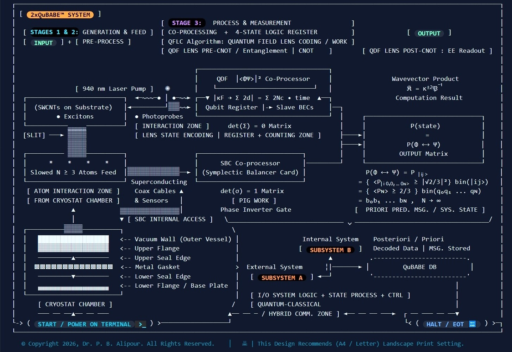

<!DOCTYPE html>
<html lang="en">
<head>
  <meta charset="UTF-8" />
  <meta name="viewport" content="width=device-width, initial-scale=1.0" />
  <title>2xQuBABE&trade; Macro/Microscopic Sampling Simulator</title>
  
  <!-- Custom QDF Terminal Command Processor Engine -->
<script src="./2xQuBABE-terminal-commands.js"></script>
  
<!-- ======================================================================= -->
<!-- 1. STYLING & ICONS (ONLINE WITH OFFLINE FALLBACKS)                      -->
<!-- ======================================================================= -->
  
 <!-- Tailwind Online CDN -->
<script src="https://cdn.tailwindcss.com"></script>
<!-- Tailwind Offline Fallback -->
<script>
  if (typeof tailwind === 'undefined') {
    document.write('<script src="tailwind.min.js"><\/script>');
  }
</script>

<!-- Tailwind Online CDN -->
<script src="https://cdn.tailwindcss.com"></script>
<!-- Tailwind Offline Fallback -->
<script>
  if (typeof tailwind === 'undefined') {
    document.write('<script src="tailwind.min.js"><\/script>');
  }
</script>

<!-- Material Icons Online CDN -->
<link id="online-icons" href="https://fonts.googleapis.com/icon?family=Material+Icons" rel="stylesheet" />

<!-- Complete Material Icons Offline Fallback Rules -->
<style>
  @font-face {
    font-family: 'Material Icons';
    font-style: normal;
    font-weight: 400;
    src: url('material-icons.woff2') format('woff2');
  }
  /* Fallback utility class definitions required by the browser when offline */
  .material-icons {
    font-family: 'Material Icons';
    font-weight: normal;
    font-style: normal;
    font-size: 24px;
    line-height: 1;
    letter-spacing: normal;
    text-transform: none;
    display: inline-block;
    white-space: nowrap;
    word-wrap: normal;
    direction: ltr;
    -webkit-font-smoothing: antialiased;
    text-rendering: optimizeLegibility;
    -moz-osx-font-smoothing: grayscale;
    font-feature-settings: 'liga';
  }
</style>


<!-- ======================================================================= -->
<!-- 2. CORE ENGINES (ONLINE WITH SYNCHRONOUS OFFLINE FALLBACK)               -->
<!-- ======================================================================= -->  
<!-- Attempt Online CDNs First -->
<script src="https://unpkg.com/react@18/umd/react.production.min.js" crossorigin></script>
<script src="https://unpkg.com/react-dom@18/umd/react-dom.production.min.js" crossorigin></script>
<script src="https://unpkg.com/@babel/standalone/babel.min.js"></script>

<!-- If Online CDNs fail with ERR_INTERNET_DISCONNECTED, fallback cleanly -->
<script>
  if (typeof React === 'undefined') {
    document.write('<script src="react.production.min.js"><\/script>');
  }
</script>
<script>
  if (typeof ReactDOM === 'undefined') {
    document.write('<script src="react-dom.production.min.js"><\/script>');
  }
</script>
<script>
  if (typeof Babel === 'undefined') {
    document.write('<script src="babel.min.js"><\/script>');
  }
</script>


<!-- Note: Section 4 (Manual Compilation Trigger) has been entirely removed -->
  
<style>

/* IEEE Bracketed List Styling */
ol.ieee-list {
  list-style: none !important;
  counter-reset: ieee-item !important;
  padding-left: 0 !important;
  margin-left: 0 !important;
}

ol.ieee-list > li {
  counter-increment: ieee-item !important;
  position: relative !important;
  padding-left: 1.75rem !important;
  list-style-type: none !important;
}

ol.ieee-list > li::before {
  content: "[" counter(ieee-item) "]" !important;
  position: absolute !important;
  left: 0 !important;
  top: 0 !important;
  font-family: ui-monospace, SFMono-Regular, Menlo, Monaco, Consolas, monospace !important;
  font-weight: 600 !important;
  color: #22d3ee !important; /* Cyan-400 */
}

@media print {
  ol.ieee-list > li::before {
    color: #000000 !important; /* Forces solid black in print mode */
  }
}

@media print {
  /* Force clean white background and clear forced dark mode background colors */
  body, 
  #root, 
  div {
    background-color: #ffffff !important;
    background: #ffffff !important;
    color: #000000 !important;
  }

  /* Force SVG vector elements to dark stroke and readable text */
  svg {
    background-color: #ffffff !important;
  }

  /* Convert cyan, blue, yellow, and white text inside SVG/Title to sharp black */
  svg text {
    fill: #000000 !important;
  }

  /* Make SVG border lines, grid lines, and accents sharp dark gray/black */
  svg line, 
  svg rect, 
  svg circle {
    stroke: #1e293b !important;
  }

  /* Ensure background colors on cards print cleanly or render as outlined boxes */
  svg rect[fill="#0f172a"] {
    fill: #7A7B7A !important;
    stroke: #000000 !important;
  }

  /* Hide non-printable UI controls like play/pause and range sliders 
  button,
  input[type="range"] {
    display: none !important;
  } */
}

@media print {
  /* Force table text to solid dark slate/black regardless of background graphics setting */
  table, 
  table * {
    -webkit-print-color-adjust: exact !important;
    print-color-adjust: exact !important;
  }

  /* Table Header Text Override */
  table th {
    color: #000000 !important;
    font-weight: 700 !important;
    background-color: #f1f5f9 !important; /* Soft light slate for headers when backgrounds ON */
    border-color: #475569 !important;
  }

  /* Table Body Text & Borders Override */
  table td {
    color: #0f172a !important; /* Crisp dark slate for descriptions */
    border-color: #cbd5e1 !important;
  }

  /* Definition Column Specific Override */
  table td.td-definition {
    color: #000000 !important;
    font-weight: 600 !important;
  }

  /* Description Column Specific Override */
  table td.td-description {
    color: #1e293b !important;
  }

  /* Keep Symbol Accents Legible and Darkened */
  .print-symbol-cyan { color: #0284c7 !important; }
  .print-symbol-amber { color: #d97706 !important; }
  .print-symbol-rose { color: #e11d48 !important; }
  .print-symbol-purple { color: #7c3aed !important; }
  .print-symbol-emerald { color: #059669 !important; }
  .print-symbol-sky { color: #0284c7 !important; }
}
  
</style>
</head>
<body class="bg-[#0d1117] text-white">
  <div id="root"></div>
  

  <script type="text/babel">
    const { useState, useRef, useEffect } = React;

    function App() {
      return <QFLCSimulator />;
    }

    function QFLCSimulator() {
	//System is in ON/OFF state (Power ON/OFF Switch)
	const [isPowerOn, setIsPowerOn] = useState(false); // Set to OFF by default
	
      // Entropy acts as Thermal Depth Indicator (0.00 = Deep Base Cold, 1.00 = Warm Top)
      // Cryostat Operational Chamber Mode
  const [cryoMode, setCryoMode] = useState("dry"); // "dry" or "wet"
  const [entropy, setEntropy] = useState(0.24);
  const [couplingFactor, setCouplingFactor] = useState(0.85);
  const [coolantFlow, setCoolantFlow] = useState("optimal");
  const [isPlaying, setIsPlaying] = useState(true);
  const [laserState, setLaserState] = useState("off"); // "off", "igniting", "pulsing"
  
      const [dimensions, setDimensions] = useState({ width: 800, height: 450 });
      const [isMobile, setIsMobile] = useState(false);
      const containerRef = useRef(null);
	  
	  const [showRibbonTooltip, setShowRibbonTooltip] = useState(false);
	  
	  //Global number of particles assigned to N 
	  const [particleCountN, setParticleCountN] = useState(3); // Minimum number of particles needed for the 2xQuBABE system flow is 3.

// New state hooks for Chamber and Midline (SWCNT uses your existing 'particles' state)
const [chamberParticles, setChamberParticles] = useState([]);
const [midlineParticles, setMidlineParticles] = useState([]);

// New State for Recording
const [isRecording, setIsRecording] = useState(false);
const [recordedData, setRecordedData] = useState([]);


// Function to handle toggling and saving
const handleRecordToggle = () => {
  if (isRecording) {
    // Stop recording and trigger download
    setIsRecording(false);
    if (qdfDataset.length > 0) {
      exportToCSV(qdfDataset);
    }
  } else {
    // Start recording: clear the dataset to redraw the graph fresh
    setIsRecording(true);
    setQdfDataset([]);
  }
};

// Function to generate and download CSV
const exportToCSV = (data) => {
  if (data.length === 0) return;
  
  // Dynamically extract headers from the keys of the first object
  const headers = Object.keys(data[0]).join(",");
  
  // Map rows, wrapping each value in quotes to protect internal commas 
  const rows = data.map(row => {
    return Object.values(row).map(val => `"${val}"`).join(",");
  }).join("\n");
  
  const csvContent = `${headers}\n${rows}`;
  
  const blob = new Blob([csvContent], { type: "text/csv;charset=utf-8;" });
  const link = document.createElement("a");
  const url = URL.createObjectURL(blob);
  link.setAttribute("href", url);
  
  // Timestamp the file automatically
  link.setAttribute("download", `QuBABE_simulation_data_${new Date().toISOString().replace(/[:.]/g, "-")}.csv`);
  document.body.appendChild(link);
  link.click();
  document.body.removeChild(link);
  URL.revokeObjectURL(url);
};


//For snapshot pauses of the children widgets...
const [pausedSnapshot, setPausedSnapshot] = useState(null);
const [isCapturing, setIsCapturing] = useState(false);


// 1. Create a reference to hold the freshest data snapshot
const latestDataRef = useRef({});

// 2. Update the snapshot silently on every render
useEffect(() => {
  latestDataRef.current = {
    Timestamp: new Date().toISOString(),
    Power_State: isPowerOn ? "ON" : "OFF",
    Cryo_Mode: cryoMode,
    Entropy_S: entropy.toFixed(2),
    Coupling_G: couplingFactor.toFixed(2),
    Dissipation_Lambda: dissipationFactor,
    Order_Parameter_O: orderParameter,
    Expected_Probability: expectedProbability,
    Spatial_Density_Rho: liveRho,
    Wavevector_Trace: traceValue,
    Phase_State: stateClassification
  };
});


// Detect if screen width is below desktop threshold (< 768px)
const [isMobileScreen, setIsMobileScreen] = useState(window.innerWidth < 768);

useEffect(() => {
  const handleResize = () => setIsMobileScreen(window.innerWidth < 768);
  window.addEventListener('resize', handleResize);
  return () => window.removeEventListener('resize', handleResize);
}, []);

// 3. The actual recording loop (captures data every 1 second)
useEffect(() => {
  let intervalId;
  if (isRecording && isPlaying) {
    intervalId = setInterval(() => {
      setRecordedData(prev => [...prev, { ...latestDataRef.current }]);
    }, 1000); // 1000ms = 1 second intervals. Change this if you want faster/slower logging.
  }
  return () => clearInterval(intervalId);
}, [isRecording, isPlaying]);

      useEffect(() => {
        const handleResize = () => {
          if (containerRef.current) {
            const w = containerRef.current.getBoundingClientRect().width || 800;
            const mobile = w < 640;
            setIsMobile(mobile);
            const aspect = mobile ? 0.75 : 0.53;
            setDimensions({ width: w, height: w * aspect });
          }
        };
        handleResize();
        window.addEventListener("resize", handleResize);
        return () => window.removeEventListener("resize", handleResize);
      }, []);
	  
	  
	  // Auxiliary Hook: Manages Chamber & Midline particle streams independently
useEffect(() => {
  if (!isPowerOn) {
    setChamberParticles([]);
    setMidlineParticles([]);
    return;
  }
  
  

  // Populate initial particles when powered ON
  setChamberParticles(
    Array.from({ length: particleCountN }).map((_, i) => ({
      id: `chamber-${Date.now()}-${i}`,
      xRatio: (Math.random() - 0.5) * 0.5,
      yRatio: i / particleCountN,
      speed: 0.002 + Math.random() * 0.003,
      phase: Math.random() * Math.PI * 2,
    }))
  );

  // Proportional count: scales with particleCountN, capped at 100 when N reaches 1000
  // Proportional count for chamber particles scaling cleanly from baseline N >= 3
  const targetMidCount = particleCountN >= 1000 
    ? 100 
    : Math.max(5, Math.round((particleCountN / 1000) * 100));

  setMidlineParticles(
    Array.from({ length: targetMidCount }).map((_, i) => ({
      id: `midline-${Date.now()}-${i}`,
      xRatio: i / targetMidCount,
      yOffset: (Math.random() - 0.5) * 0.3,
      speed: 0.005 + Math.random() * 0.004,
      phase: Math.random() * Math.PI * 2,
    }))
  );
}, [isPowerOn, particleCountN]);

// Auxiliary Loop: Animates Chamber & Midline particles
useEffect(() => {
  if (!isPowerOn || !isPlaying) return;

  let animId;
  const updateAuxPhysics = () => {
    // 1. Chamber particles (Thermal jump/oscillation around baseline)
    setChamberParticles((prev) =>
      prev.map((p) => ({
        ...p,
        // Advance phase to drive smooth vertical jumping
        phase: p.phase + 0.05 + (entropy || 0) * 0.08,
      }))
    );

    // 2. Midline connection particles (Horizontal transfer)
    setMidlineParticles((prev) =>
      prev.map((p) => ({
        ...p,
        xRatio: (p.xRatio + p.speed) % 1.0,
        phase: p.phase + 0.07,
      }))
    );

    animId = requestAnimationFrame(updateAuxPhysics);
  };

  animId = requestAnimationFrame(updateAuxPhysics);
  return () => cancelAnimationFrame(animId);  
  
}, [isPowerOn, isPlaying, entropy]);


// NEW: Reference to the QDF Lens iframe for live syncing
const qdfWidgetRef = useRef(null); // 1st child instantiation

// NEW: Reference to the UV Phase Space_Entropy iframe for live syncing
const cvPhaseWidgetRef = useRef(null);  //2nd child instantiation


// Isolated test: Broadcast only liveRho to the QDF Lens widget
  // Continuous telemetry broadcast active whenever system power is ON
// Keep this simple just to handle the initial power-on state sync
useEffect(() => {
  if (isPowerOn && qdfWidgetRef.current && qdfWidgetRef.current.contentWindow) {
    qdfWidgetRef.current.contentWindow.postMessage({
      type: 'SYNC_QDF',
      rho: parseFloat(liveRho)
    }, '*');
  }
}, [isPowerOn]); // Only triggers when power is toggled on/off


// Reactive sync effect for Temperature changes in 2nd Child
useEffect(() => {
  syncPayloadToChild2();
}, [particleCountN, entropy, cryoMode, isPowerOn, isPlaying]);


// Reactive sync effect for Play/Pause state in 2nd Child
useEffect(() => {
  if (isPowerOn && cvPhaseWidgetRef.current && cvPhaseWidgetRef.current.contentWindow) {
    safeBroadcast(cvPhaseWidgetRef, {
      type: "SYNC_PLAY",
      playing: isPlaying
    });
  }
}, [isPlaying, isPowerOn]);

	  
 //IR Laser Pump Dynamics 
  useEffect(() => {
  let timeoutId;
  if (isPowerOn) {
    setLaserState("igniting"); // Instantly show the middle transition image
    timeoutId = setTimeout(() => {
      setLaserState("pulsing"); // Fade into the bright pulsing image
    }, 800); // 800ms delay (adjust this value if you want a faster/slower fade)
  } else {
    setLaserState("off"); // Instantly revert when powered off
  }
  return () => clearTimeout(timeoutId);
}, [isPowerOn], isPlaying, entropy);

	  

      const [particles, setParticles] = useState([]);
      const animationRef = useRef(null);
      const lastTimeRef = useRef(performance.now());

      useEffect(() => {
	  if (!isPowerOn) {
    setParticles([]);
    return;
  }
        const updatedParticles = Array.from({ length: particleCountN }, (_, i) => ({
          id: i,
          xRatio: Math.random(),
          yOffset: (Math.random() - 0.5) * 0.6,
          speed: 0.02 + Math.random() * 0.03,
          phase: Math.random() * Math.PI * 2
        }));
        setParticles(updatedParticles);
      }, [particleCountN, isPowerOn]);


      useEffect(() => {
        if (!isPlaying) {
          if (animationRef.current) cancelAnimationFrame(animationRef.current);
          return;
        }

        const tick = (time) => {
          const delta = (time - lastTimeRef.current) / 1e3;
          lastTimeRef.current = time;

          const speedMultiplier = (1.2 + entropy) * 1.5;

          setParticles((prev) =>
            prev.map((p) => {
              let nextX = p.xRatio + p.speed * speedMultiplier * (delta * 12);
              if (nextX > 1) {
                nextX = 0; // Frictionless wrap around inside SWCNT channel
              }
              return {
                ...p,
                xRatio: nextX,
                phase: p.phase + (0.5 + entropy * 6.5) * delta
              };
            })
          );

          animationRef.current = requestAnimationFrame(tick);
        };

        animationRef.current = requestAnimationFrame(tick);
        return () => {
          if (animationRef.current) cancelAnimationFrame(animationRef.current);
        };
      }, [isPlaying, entropy]);

      // Wet state mapping variables
      let stateClassification = "Superfluid Coherent State";
      let stateColorClass = "text-emerald-400";
      let stateBgClass = "bg-emerald-500/20";
	  let phaseFillColor = "#10b981"; // Emerald hex
      let phaseStrokeColor = "#10b981";
      let phaseTextColor = "#6ee7b7";
	  
// 1. Define a flow efficiency coefficient based on selected mode
const flowEfficiency = coolantFlow === "high" 
  ? 0.75  // High flow enhances cooling, reducing thermal noise/dissipation
  : coolantFlow === "low" 
    ? 1.35  // Low flow restricts cooling, increasing thermal buildup
    : 1.0;  // Optimal baseline

    // 2. Scale dissipation factor dynamically by flow mode and particle population N
let dissipationFactor = (
  entropy * 0.22 * (1 - couplingFactor * 0.5) * flowEfficiency * (1 + (particleCountN / 5000))
).toFixed(4);

let orderParameter = Math.max(0, 1 - entropy * 1.25).toFixed(2);

// 3. Expected transition probability calculation incorporating flow impact; Calculate Expected Transition Probability P(S,G) based on asymptotic Eq (53)
let expectedProbability = (8 / (9 * (1 + 2.9 * parseFloat(dissipationFactor)))).toFixed(4);
let expectedProbPercent = (expectedProbability * 100).toFixed(1);

// 4. Dynamic spatial density (ρ)(liveRho) driven by BOTH Entropy and Coupling via the Dissipation Factor, factoring in coolant efficiency and particle count N. 
// The following pertain to the Unified Thermodynamic & N-Particle Scaling Formulas:
const normalizedDissipation = parseFloat(dissipationFactor) / 0.22;
// N-particle scaling factor (adjusts density slightly based on population density and quantum advantage)
const nFactor = 1.0 + (Math.log(Math.max(1, particleCountN)) / 100);

// The following also scales ρ from the perfect coherent peak (0.168) up to the classical dissipation limit (0.237).
// This is the Unified liveRho calculation shared by display and iframe postMessage:
let liveRho = (0.119 + normalizedDissipation * 0.118 * (1 / flowEfficiency)).toFixed(3);
let kSquaredRho = (8.41 * parseFloat(liveRho)).toFixed(2);
let traceValue = (Math.sqrt(parseFloat(kSquaredRho)) || 0).toFixed(3);

// Define Density Range Bounds
const minRho = 0.119; // Zero-superposition / Pure product state threshold
const maxRho = 0.237; // Peak double-field entanglement threshold

// Normalize liveRho to [0, 1] range
let normRho = Math.min(1.0, Math.max(0.0, (parseFloat(liveRho) - minRho) / (maxRho - minRho)));

// STEP 1: Direct Position Product Root: √|⟨𝔭⟩| strictly bounded to [1, √2] (1.000 to 1.414)
//let rawPosRoot = 1.0 + (parseFloat(liveRho) * 0.293); 
// STEP 1: Derive √|⟨𝔭⟩| strictly bounded to [1.000, 1.414] (√2)
let rawPosRoot = 1.000 + normRho * (1.414 - 1.000); // = parseFloat(traceValue);
let sqrtPosProduct = Math.min(1.414, Math.max(1.000, rawPosRoot)).toFixed(3); // √|⟨𝔭⟩| ∈ [1, √2]

// STEP 2: Derive <k> = √|⟨𝔎⟩| = (√|⟨𝔭⟩|)^-1 strictly bounded to [1.000 down to 0.707]
let wavevectorK = (1.0 / parseFloat(sqrtPosProduct)).toFixed(3);

//Catch errors when broadcasting/receiving to/from children
const safeBroadcast = (ref, payload) => {
  try {
    if (ref && ref.current && ref.current.contentWindow) {
      ref.current.contentWindow.postMessage(payload, '*');
    }
  } catch (e) {
    // Silently absorbs file:// origin restrictions without stopping execution
  }
};

// Create a unified sync function in your parent component so that whenever entropy, couplingFactor, or 
// particleCountN changes, an identical payload is broadcast to the child iframe:
const syncPayloadToChild = (updatedRho, updatedKappa, updatedN) => {
  if (isPowerOn && qdfWidgetRef.current && qdfWidgetRef.current.contentWindow) {
    qdfWidgetRef.current.contentWindow.postMessage({
      type: 'SYNC_QDF',
      rho: parseFloat(updatedRho),
      kappa: parseFloat(updatedKappa),
      n: parseInt(updatedN, 10),
      architectureMode: 'macro_hybrid',
      hardwareMultiplier: 1.0
    }, '*');
  }
};

// Sync function for 2nd Child (CV Phase Space Widget)
const syncPayloadToChild2 = () => {
  if (isPowerOn && cvPhaseWidgetRef.current && cvPhaseWidgetRef.current.contentWindow) {
    //  Convert current entropy/mode into calculated temperature (K)
    const currentTemp = cryoMode === "dry" 
      ? parseFloat((0.007 + entropy * 299.993).toFixed(3))
      : parseFloat(Math.max(1.0, (4.0 * entropy * 296.2)).toFixed(1));

    //  Broadcast temperature to child 2
    cvPhaseWidgetRef.current.contentWindow.postMessage({
      type: "SYNC_TEMP",
      temp: currentTemp
    }, "*");

    //  Broadcast play/pause state to child 2
    cvPhaseWidgetRef.current.contentWindow.postMessage({
      type: "SYNC_PLAY",
      playing: isPlaying
    }, "*");

    // Broadcast/Send Particle Count N sync
    cvPhaseWidgetRef.current.contentWindow.postMessage({ type: "SYNC_N", n: particleCountN }, "*");
	
	
	
  if (cvPhaseWidgetRef.current && cvPhaseWidgetRef.current.contentWindow) {
    const currentTemp = cryoMode === "dry" 
      ? parseFloat((0.007 + entropy * 299.993).toFixed(3))
      : parseFloat(Math.max(1.0, (4.0 * entropy * 296.2)).toFixed(1));

    cvPhaseWidgetRef.current.contentWindow.postMessage({
      type: "SYNC_THERMO_STATE",
      isPowerOn: isPowerOn,
      g: parseFloat(couplingFactor),
      s: parseFloat(entropy),
      prob: parseFloat(expectedProbability),
      temp: currentTemp,
      playing: isPlaying,
      n: particleCountN
    }, "*");
  }
	
	
  }
};


// ==========================================================
// TERMINAL LOGGING & DATASET RECORDING (Table 4 Projections)
// ==========================================================
const [terminalLogs, setTerminalLogs] = useState([]);
const [qdfDataset, setQdfDataset] = useState([]);
const [commandInput, setCommandInput] = useState("");
const terminalScrollRef = useRef(null);

// Automatically reset terminal logs to clean standby state when system is turned OFF
useEffect(() => {
  if (!isPowerOn) {
    setTerminalLogs([]);
  }
}, [isPowerOn]);


// Auto-scroll terminal body to the bottom on new logs, command inputs, or power toggles
useEffect(() => {
  if (terminalScrollRef.current) {
    // Wait for the browser paint frame to ensure new DOM elements are fully rendered
    requestAnimationFrame(() => {
      if (terminalScrollRef.current) {
        terminalScrollRef.current.scrollTop = terminalScrollRef.current.scrollHeight;
      }
    });
  }
}, [terminalLogs, commandInput, isPowerOn]);

useEffect(() => {
  if (!isPowerOn) return;

  const P = parseFloat(expectedProbability) || 0; 
  const isHighP = P >= 0.6667;
  
  // FIX: Use couplingFactor instead of flowEfficiency to accurately read the G slider
  const sVal = parseFloat(entropy) || 0;
  const gVal = parseFloat(couplingFactor) || 0; 
  
let currentS = 0;
  let currentG = 0;
  let primaryOutput = "";
  let b_i_j_classical = "N/A";
  let b_ij_quantum = "N/A";
  let sigmaSum = "N/A";
  let complementOutput = ""; // Dynamic complement notes
    // const complementOutput = `[SYSTEM SYNCED TO THEORETICAL LIMITS]`;

  // 1. Uncoupled Baseline (G < 0.5 or |G| = 0, S < 0.5 or |S| = 0 -> |00>)
  if (gVal < 0.5 && sVal < 0.5) {
    currentS = 0; currentG = 0;
    b_i_j_classical = "{0}";
    b_ij_quantum = "{0}";
    sigmaSum = "0";
    primaryOutput = `EXPECTATION P(i|j) => b(00) = {0} [Σ = 0, GS BASELINE]`;
    complementOutput = `EXCLUDED P' => b(01)={1}, b(10)={2}, b(11)={3}`;
  } 
  // 2. The Perfect Quantum Coupling State (G >= 0.5, S < 0.5)
  //  which is a Superposition Swing(G = 1, S = 0 -> |10>)
  // NOW MAPS TO |10> = {2} (or {0, 2} quantum superposition that can develop into entanglement)
 else if (gVal >= 0.5 && sVal < 0.5) {
    currentS = 0; currentG = 1;
    b_i_j_classical = "N/A"; 
    b_ij_quantum = "{0, 2}";
    sigmaSum = "2";
    primaryOutput = `EXPECTATION P(i|j) >= 2/3 => b(10) = {0, 2} [Σ = 2, PERFECT QUANTUM STATE]`;
    complementOutput = `EXCLUDED P' => b(00)={0}, b(01)={1}, b(11)={3}`;
  } 
  // 3. The Superposition Swing (G < 0.5 , S >= 0.5);
  // The Classical Collapse State (|G| = 0, |S| = 1 -> |01>)
  // NOW MAPS TO |01> = {1}
  else if (gVal < 0.5 && sVal >= 0.5) {
    currentS = 1; currentG = 0;
    b_i_j_classical = "{1}";
    b_ij_quantum = "N/A";
    sigmaSum = "1";
    primaryOutput = `EXPECTATION P(i|j) < 2/3 => b(01) = {1} [Σ = 1, DEFINITE ES / COLLAPSE]`;
    complementOutput = `EXCLUDED P' => b(00)={0}, b(10)={2}, b(11)={3}`;
  }
  // 4. The Thermal Fight / Spanning Complement (G >= 0.5, S >= 0.5)
  // The Thermal Fight (|G| = 1, |S| = 1 -> |11>)
  else if (gVal >= 0.5 && sVal >= 0.5) {
    currentS = 1; currentG = 1;
    b_i_j_classical = "N/A";     
    b_ij_quantum = "{1, {0, 2}}";
    sigmaSum = "3";
    primaryOutput = `DOMINANT P(1,1) => b(11) spans {1, {0, 2}} [Σ = 3, SPANNING COMPLEMENT]`;
    complementOutput = `EXCLUDED P' <= 1/3 => b(00)={0} [DOMINANT STATE |3> REACHED]`;
  }


  const newLog = {
    id: Date.now(),
    timestamp: new Date().toLocaleTimeString('en-US', { hour12: false }),
    s: currentS,
    g: currentG,
    prob: (P * 100).toFixed(1),
    primary: primaryOutput,
    complement: complementOutput,
  };
  
  setTerminalLogs(prev => [...prev.slice(-2), newLog]);

  setQdfDataset(prev => {
    const lastEntry = prev[prev.length - 1];
    if (lastEntry && lastEntry.S === currentS && lastEntry.G === currentG && lastEntry.Probability === P.toFixed(3) && lastEntry["Particles (N)"] === particleCountN) {
        return prev; 
    }
    
    return [...prev, {
      Step: prev.length + 1,
	  "Particles (N)": particleCountN, // Included particle count N column
      "S ← j": currentS,
      "G ← i": currentG,
      Probability: P.toFixed(3),
      "b(i|j)": b_i_j_classical,
      "b(ij)": b_ij_quantum,
      "Sum (Σ)": sigmaSum,
      "P notes": primaryOutput,
      "P' notes": complementOutput
    }];
  });

}, [isPowerOn, expectedProbability, entropy, couplingFactor]);


// Broadcast play/pause state to the child QDF Lens
useEffect(() => {
  if (qdfWidgetRef.current && qdfWidgetRef.current.contentWindow) {
    qdfWidgetRef.current.contentWindow.postMessage({
      type: 'SYNC_PLAY_STATE',
      isPlaying: isPlaying
    }, '*');
  }
}, [isPlaying]);

      if (!isPowerOn) {
  stateClassification = "Phase State OFF";
  stateColorClass = "text-slate-400";
  stateBgClass = "bg-slate-800/40";
  phaseFillColor = "#334155";   // Slate-700 grayed fill
  phaseStrokeColor = "#64748b"; // Slate-500 grayed border
  phaseTextColor = "#94a3b8";   // Slate-400 grayed text
  } else if (entropy > 0.3 && entropy <= 0.4) {
        stateClassification = "GSM Production? (Y/N)";
  stateColorClass = "text-amber-400";
  stateBgClass = "bg-amber-500/20";
  phaseFillColor = "purple";
  phaseStrokeColor = "purple";
  phaseTextColor = "pink";
  } else if (entropy > 0.4 && entropy <= 0.7) {
        stateClassification = "Transitional GSM ⟷ LC Phase";
  stateColorClass = "text-amber-400";
  stateBgClass = "bg-amber-500/20";
  phaseFillColor = "#f59e0b";
  phaseStrokeColor = "#f59e0b";
  phaseTextColor = "#fde68a";
      } else if (entropy > 0.7) {
        stateClassification = "Classical Dissipative";
  stateColorClass = "text-rose-400";
  stateBgClass = "bg-rose-500/20";
  phaseFillColor = "#f43f5e";
  phaseStrokeColor = "#f43f5e";
  phaseTextColor = "#fda4af";
      }


      // Wet vs. Dry Temperature Readout Computation
  // Temperature scaling logic
const computedTemp = cryoMode === "dry"
  ? (0.007 + entropy * 299.993).toFixed(3) // Dry mode: 0.007 K to 300.000 K
  : Math.max(
      1.0, 
      (4 + entropy * 296.2 * (coolantFlow === "low" ? 1.25 : coolantFlow === "high" ? 0.75 : 1.0))
    ).toFixed(1); // Wet mode: < 4.0 K at min entropy up to 300.0 K at max entropy

// Flange Level Telemetry (Top to Bottom mapping for Dry Mode)
const getDryPlateReadout = () => {
  if (entropy > 0.85) return { stage: "Y-Axis Head / Flange", temp: "~ 300 K", phase: "Room Temperature" };
  if (entropy > 0.60) return { stage: "Level 1: Upper Plate", temp: "50 K Flange", phase: "Thermal Shield" };
  if (entropy > 0.35) return { stage: "Level 2: Middle Plate", temp: "4.0 K Flange", phase: "Helium Pre-Cool" };
  if (entropy > 0.12) return { stage: "Level 3: Still Plate", temp: "0.7 K (700 mK)", phase: "Dilution Phase" };
  return { stage: "Level 4: Mixing Base", temp: "< 0.01 K", phase: "Superfluid Phase" };
};
const dryPlate = getDryPlateReadout();

// Virtual Fixed Stage Dimensions (Prevents spatial distortion on resize)
  const virtualWidth = 1250;
  const virtualHeight = 850;  // Gives a taller canvas for graphical elements of the diagram
  const headerHeight = 55;
  const contentHeight = virtualHeight - headerHeight;

  // Fixed Anchor Positions
  const cxLeft = 330;
  const cyLeft = headerHeight + contentHeight * 0.45;
  const rCryo = 85;

  const cxRight = 720;
  const cyRight = headerHeight + contentHeight * 0.40;
  const tubeWidth = 320;
  const tubeHeight = 65;

  const chipX = cxRight - tubeWidth / 1.5 + tubeWidth / 2;
  const chipY = cyRight + tubeHeight + tubeHeight / 2;
  

//for QDF lens child zoom in/out option
const [lensZoom, setLensZoom] = useState(0.58); // Default zoomed out slightly
//for CV Phase Space Entropy child zoom in/out option
const [lensZoom2, setLensZoom2] = useState(0.62); // Default zoomed out slightly

      return (
        <div ref={containerRef} className="w-full bg-[#0d1117] text-white print:bg-white print:text-black font-sans flex flex-col select-none relative overflow-hidden">
          
		    

          {/* Outer Scroll Container for Narrow Viewports */}
      <div className="relative w-full overflow-x-auto overflow-y-hidden border-b border-slate-800 scrollbar-thin">


        {/* Fixed Stage Boundary Wrapper */}
		
            {/* Wet System Temp Readout Card */}
            {/* System Temperature Readout Card */}

   {/* NEW ABSOLUTE WRAPPER FOR BOTTOM PLACEMENT */}
   
{/* BOTTOM LEFT CONTROLS CONTAINER (Fully Responsive Flex Layout) 
<div className={`absolute left-9 z-30 flex items-center gap-3 flex-wrap transition-all duration-300 ${
  qdfDataset.length > 0 
    ? "bottom-[230px]" 
    : isPowerOn 
      ? "bottom-[140px]" 
      : "bottom-7"
}`}>*/}
  
 
{/* </div>  */}


            {/* Vector Interface Core Layer */}  {/* viewBox={`0 0 ${virtualWidth} ${virtualHeight}`} */}
           <svg
          role="img"
          aria-label="Interactive diagram illustrating Dr. Alipour's QF-LC QDF Cryostat chamber and SWCNT core lattice dynamics"
           viewBox={`0 0 ${virtualWidth} ${virtualHeight}`}
          className="w-full h-full"
          preserveAspectRatio="xMidYMid meet"
        >

{/* ========================================================== */}
{/* NATIVE SVG EMBEDDED CONTROLS STATION (Zero Overlap Layout) */}
{/* ========================================================== */}
{/* Anchored Control Station Panel inside SVG */}
{/* Inside <svg viewBox="0 0 1250 770" ...> */}

{/* NATIVE EMBEDDED CONTROLS STATION (Zero Overlap Layout) */}
<foreignObject 
  x="35" 
  y={qdfDataset.length > 0 ? 777 : isPowerOn ? 777 : 777 }  // Move controls when power is on proportionally.  
  width="540" 
  height="40"
>
  <div xmlns="http://www.w3.org/1999/xhtml" className="w-full h-full flex items-center gap-3 bg-[#0f172a]/95 border border-slate-700/80 rounded-lg px-3 py-1.5 shadow-xl backdrop-blur-md font-sans select-none">
    
    {/* 1. System Power Toggle */}
    <button
      type="button"
      onClick={() => setIsPowerOn(!isPowerOn)}
      className={`px-3.5 py-1 rounded-full text-[10px] font-mono font-bold transition-all flex items-center gap-1.5 border shrink-0 cursor-pointer ${
        isPowerOn
          ? "bg-emerald-500/20 text-emerald-400 border-emerald-500/50 shadow-[0_0_8px_rgba(16,185,129,0.3)] hover:bg-teal-700 hover:text-white"
          : "bg-slate-800 text-slate-400 border-slate-700 hover:bg-teal-700 hover:text-white"
      }`}
    >
      <span className={`w-2 h-2 rounded-full ${isPowerOn ? "bg-emerald-400 animate-pulse" : "bg-slate-500"}`} />
      {isPowerOn ? "SYSTEM: ON" : "SYSTEM: OFF"}
    </button>

    {/* 2. Play/Pause Toggle */}
    <button
      type="button"
      onClick={() => setIsPlaying(!isPlaying)}
      className="w-7 h-7 rounded-full flex items-center justify-center cursor-pointer transition-colors bg-slate-800 hover:bg-teal-700 text-white shadow shrink-0"
    >
      <span className="material-icons text-sm">{isPlaying ? "pause" : "play_arrow"}</span>
    </button>
    
    {/* 3. Record Toggle */}
    <button
      type="button"
      onClick={handleRecordToggle}
      className={`w-7 h-7 rounded-full flex items-center justify-center cursor-pointer transition-colors shadow text-white shrink-0 ${
        isRecording 
          ? "bg-rose-700 hover:bg-rose-800 animate-pulse shadow-[0_0_8px_rgba(190,18,60,0.5)]" 
          : "bg-slate-800 hover:bg-teal-700"
      }`}
    >
      <span className="material-icons text-sm">{isRecording ? "stop" : "fiber_manual_record"}</span>
    </button>
    
    {/* Label */}
    <span className="text-[10px] font-mono text-slate-400 tracking-wide select-none truncate">
      Record Events / Dataset
    </span>

  </div>
</foreignObject>

  <defs>
  {/* Safe Content Viewport Clip Path (Restricts rendering below y=...px) */}
    <clipPath id="canvasClip">
      <rect 
        x="-150" 
        y="10" 
        width={dimensions.width + 500} 
        height={dimensions.height + 400} 
        rx="0" 
      />
    </clipPath>
    <linearGradient id="coolantGrad" x1="0" y1="0" x2="0" y2="1">
   <stop offset="0%" stopColor="#38bdf8" stopOpacity="0.4" />
   <stop offset="100%" stopColor="#0284c7" stopOpacity="0.1" />
   </linearGradient>
   <linearGradient id="tubeGrad" x1="0" y1="0" x2="0" y2="1">
   <stop offset="0%" stopColor="#1e293b" stopOpacity="0.8" />
   <stop offset="50%" stopColor="#0f172a" stopOpacity="0.2" />
   <stop offset="100%" stopColor="#1e293b" stopOpacity="0.8" />
   </linearGradient>
   <linearGradient id="copperGrad" x1="0" y1="0" x2="1" y2="0">
   <stop offset="0%" stopColor="#b45309" />
   <stop offset="50%" stopColor="#f59e0b" />
   <stop offset="100%" stopColor="#d97706" />
   </linearGradient>
  </defs>
  
  {/* VISIBLE TITLE TEXT & ACCENT DIVIDER LAYER */}
<g className="select-none pointer-events-none">
  {/* System Logo Cover Image (SVG Embedded) */}
  <image
    href="./2xQuBABE_sys_logo.png"
    x={isMobile ? 15 : 20}
    y={isMobile ? -10 : -10}
    width={isMobile ? "110" : "110"}
    height={isMobile ? "110" : "110"}
    preserveAspectRatio="xMidYMid meet"
  />

  {/* Header Title Text Block (Shifted right to x=95 to make room for logo) */}
  <text
    x={isMobile ? 295 : 95}
    y={isMobile ? 25 : 36}
    fill="cyan"
    fontSize={isMobile ? "24px" : "24px"}
    fontWeight="bold"
    fontFamily="sans-serif"
  >
    <tspan x={isMobile ? 135 : 135} dy="0">
      2xQuBABE&trade; System State & Computational Matrix Simulator |{" "}
    </tspan>
    <tspan fill="orange" fontSize={isMobile ? "16px" : "17px"}>
      INTERACTIVE SYSTEM ABSTRACT
    </tspan> 
    <tspan
      x={isMobile ? 135 : 135}
      dy="1.5em"
      fontSize={isMobile ? "20px" : "20px"}
      fill="#00B5B8"
    >
      Cryostat <tspan fontStyle="italic">N</tspan>-Particle Feeder, CNT Lattice Particles, QF-LCA, QDF Co-QPU &amp; Laser Dynamics |{" "}
      <tspan fill="orange" fontSize={isMobile ? "16px" : "17px"}>
        v0.7
      </tspan>
    </tspan>
  </text>

  {/* Divider Line */}
  <line
    x1={isMobile ? 15 : 20}
    y1={isMobile ? 60 : 84}
    x2={dimensions.width - (isMobile ? 15 : 20)}
    y2={isMobile ? 60 : 84}
    stroke="#06b6d4"
    strokeWidth="2"
    strokeLinecap="round"
  />
</g>


{/* ========================================================== */}
{/* TOP-LEFT LIVE PROBABILITY GRAPH (SVG Component)           */}
{/* ========================================================== */}
<g transform="translate(1073, 345)">
  {/* Background Frame */}
  <rect width="155" height="72" rx="6" fill="#0f172a" fillOpacity="0.95" stroke="#38bdf8" strokeWidth="1.2" />
  <text x="10" y="15" fontSize="8.5" fontWeight="bold" fill="#38bdf8" fontFamily="sans-serif">
    {isRecording ? "● RECORDING LIVE GRAPH" : "PROBABILITY TREND"}
  </text>
  
  {/* Mini Polyline Graph Viewport */}
  <svg x="10" y="20" width="145" height="44" viewBox="0 0 100 100" preserveAspectRatio="none">
    {/* Grid guides */}
    <line x1="0" y1="50" x2="100" y2="50" stroke="#334155" strokeWidth="0.5" strokeDasharray="2 2" />
    
    {/* Live Polyline Trace */}
    <polyline 
      fill="none" 
      stroke={isRecording ? "#f43f5e" : "#34d399"} 
      strokeWidth="2.5"
      points={qdfDataset.map((row, idx) => {
        const x = qdfDataset.length > 1 ? (idx / (qdfDataset.length - 1)) * 100 : 50;
        const y = 100 - (parseFloat(row.Probability) * 100);
        return `${x},${y}`;
      }).join(' ')}
    />
  </svg>
</g>  

{/* ========================================================= */}
  {/* CLIPPED DIAGRAM CONTENT VIEWPORT                          */}
  {/* ========================================================= */}
  {/* Updated line to move all diagram elements down/up uniformly: */}
  <g clipPath="url(#canvasClip)" transform="translate(50, 50)">

{/* ========================================== */}
{/* GLOBAL BOUNDING FRAME (2xQuBABE ENCLOSURE)   */}
{/* ========================================== */}
{/* LAYER 0 (Lowest Z-Order): System Layer */}
<g className="select-none pointer-events-none">
  {/* Main System Rounded Border */}
  <rect
    x="-30"
    y="48"
    width={virtualWidth - 30}
    height={virtualHeight*1.1 - 200}
    rx="12"
    fill="none"
    stroke="teal"
    strokeWidth="1.5"
    strokeDasharray="6 4"
  />
  
  
  
  {/* Opaque Background cut-out for the Title Label */}
  <rect
    x="35"
    y="80"
    width="90"
    height="20"
    rx="4"
    fill="#0d1117" /* Matches main background color to hide the border line underneath */
  />
  
  {/* Container Title Label */}
  <text
    x="-13"
    y="70"
    fontSize="13"
    fontWeight="bold"
    fill="#38bdf8"
    fontFamily="sans-serif"
    letterSpacing="1"
  >
    2xQuBABE&trade; System
  </text>
</g>


  {/* LAYER 1 (Lowest Z-Order above System Layer): Background Diagram Image in Dry Mode */}
  {cryoMode === "dry" && (
    <image
      href="img_cryostat_dry.png"
      x={cxLeft - rCryo * 1.44}
      y={cyLeft - rCryo * 3.36}
      width={rCryo * 4.6}
      height={rCryo * 4.6}
      opacity="0.88"
      preserveAspectRatio="xMidYMid meet"
    />
  )}
  
  {/* LAYER 1 (Lowest Z-Order): Mid Dynamic Connection Diagram Image in Dry Mode */}
{/* or Dynamic Connection Lines based on power mode */}
{cryoMode === "dry" && (
  <g opacity={isPowerOn ? "0.85" : "0.35"}>
    <line 
      x1={cxLeft * 1.94 - rCryo * 1.8 + 62.9} 
      y1={cyLeft - rCryo * 1.33} 
      x2={cxLeft + rCryo * 2.3} 
      y2={cyLeft - rCryo * 1.33} 
      className={isPowerOn ? `${stateColorClass} stroke-current` : "text-white stroke-current"} 
      strokeWidth="2" 
      strokeDasharray="2 5" 
    />
    <line 
      x1={cxLeft * 1.94 - rCryo * 1.8 + 62.9} 
      y1={cyLeft - rCryo * 1.11} 
      x2={cxLeft + rCryo * 2.3} 
      y2={cyLeft - rCryo * 1.11} 
      className={isPowerOn ? `${stateColorClass} stroke-current` : "text-white stroke-current"} 
      strokeWidth="12" 
      strokeDasharray="2 3" 
    /> 
  </g>
)}

{/* Cryostat Dry Chamber Title Text */}
{cryoMode === "dry" && (
<text x={chipX - 335} y={chipY + tubeHeight / 1 - 5} textAnchor="middle" fontSize={11} fill="#94a3b8">
  Dry Cryostat Chamber
</text>
)}  


  
{/* Cryostat Wet Chamber Title Text */}
{cryoMode === "wet" && (
<text x={chipX - 335} y={chipY + tubeHeight / 1 - 5} textAnchor="middle" fontSize={11} fill="#94a3b8">
  Wet Cryostat Chamber
</text>
)}    
  
  {cryoMode === "wet" && (
    <image
      href="img_cryostat_wet.png"
      x={cxLeft - rCryo * 1.6}
      y={cyLeft - rCryo * 3}
      width={rCryo * 4.2}
      height={rCryo * 5.5}
      opacity="0.85"
      preserveAspectRatio="xMidYMid meet"
    />
  )}
  
  {/*(cryoMode === "wet" || cryoMode === "dry") && (
    <image
      href="img_swcnt_chip.png"
      x={cxLeft + rCryo * 2.05}
      y={cyLeft - rCryo * 1.9}
      width={rCryo * 3.1}
      height={rCryo * 3.3}
      opacity="0.65"
      preserveAspectRatio="xMidYMid meet"
    />
  )*/} 

{/* ========================================================= */}
{/* NATIVE SVG VECTOR CARDS (STAYS LOCKED IN VIRTUAL VIEWBOX)  */}
{/* ========================================================= */}

{/* 1.1. Cryostat Temp Badge (Locked to Either Chamber Dry/Wet) */}
<g transform={`translate(${cxLeft - (cryoMode === "wet" ? 240 : 200)}, ${cyLeft + rCryo + 15})`}>
  <rect x="0" y="0" width="100" height="42" rx="6" fill="#0f172a" fillOpacity="0.9" stroke="#334155" strokeWidth="1" />
  <text x="50" y="16" textAnchor="middle" fontSize="10" fill="#94a3b8" fontFamily="sans-serif">Cryostat Temp</text>
  <text 
    x="50" 
    y="32" 
    textAnchor="middle" 
    fontSize="12" 
    fontWeight="bold" 
    fill={isPowerOn ? "#22d3ee" : "#64748b"} 
    fontFamily="sans-serif"
  >
    {isPowerOn ? `≤ ${computedTemp} K` : "OFF"}
  </text>
</g>


{/* 1.2. N-Particle Count Interactive Slider Card (Always visible, dynamic X position) */}
<foreignObject 
  x={cryoMode === "wet" ? cxLeft - rCryo * 3.7 : cxLeft - rCryo * 3.2} /* Adjust the wet multiplier (1.5) as needed */
  y={cyLeft - 123} 
  width="175" 
  height="56"
>
  <div xmlns="http://www.w3.org/1999/xhtml" className="w-full h-full bg-[#0f172a]/95 border border-cyan-500/50 rounded-lg p-2 flex flex-col justify-center shadow-lg">
    {/* Header with Title & Manual Number Input */}
    <div className="flex justify-between items-center text-[10px] font-mono text-cyan-400 mb-1">
      <label htmlFor="manual-particle-n" className="select-none cursor-pointer">
        Particle Count (N)
      </label>
      
      <div className="flex items-center gap-1">
        <input
          id="manual-particle-n"
          type="number"
          min="3"
          max="1000"
          value={particleCountN}
          onChange={(e) => {
            const rawVal = parseInt(e.target.value, 10);
            if (isNaN(rawVal)) {
              setParticleCountN(""); // Allow temporary empty string for backspacing
              return;
            }
            // Clamp value between 3 and 1000
            const val = Math.max(3, Math.min(1000, rawVal));
            setParticleCountN(val);

            // Sync with QDF Lens iframe
            if (isPowerOn && qdfWidgetRef.current && qdfWidgetRef.current.contentWindow) {
              const calcRho = (0.119 + entropy * 0.119).toFixed(3);
              const kSq = (8.41 * parseFloat(calcRho)).toFixed(2);
              const calcKappa = (Math.sqrt(parseFloat(kSq)) || 0).toFixed(3);

              qdfWidgetRef.current.contentWindow.postMessage({
                type: 'SYNC_QDF',
                rho: parseFloat(calcRho),
                kappa: parseFloat(calcKappa),
                n: val,
                architectureMode: 'macro_hybrid',
                hardwareMultiplier: 1.0
              }, '*');
            }
          }}
          onBlur={() => {
            // Re-enforce baseline limit if left empty or below 3 on focus loss
            if (!particleCountN || particleCountN < 3) {
              setParticleCountN(3);
            }
          }}
          className="w-14 bg-slate-900 border border-cyan-500/60 rounded px-1.5 py-0.5 text-right font-bold text-emerald-400 text-[11px] outline-none focus:border-cyan-400 focus:ring-1 focus:ring-cyan-400"
        />
      </div>
    </div>

    {/* Synchronized Range Slider */}
    <input
      type="range"
      min="3"
      max="1000"
      step="1"
      value={particleCountN || 3}
      onChange={(e) => {
        const val = parseInt(e.target.value, 10);
        setParticleCountN(val);

        if (isPowerOn && qdfWidgetRef.current && qdfWidgetRef.current.contentWindow) {
          const calcRho = (0.119 + entropy * 0.119).toFixed(3);
          const kSq = (8.41 * parseFloat(calcRho)).toFixed(2);
          const calcKappa = (Math.sqrt(parseFloat(kSq)) || 0).toFixed(3);

          qdfWidgetRef.current.contentWindow.postMessage({
            type: 'SYNC_QDF',
            rho: parseFloat(calcRho),
            kappa: parseFloat(calcKappa),
            n: val,
            architectureMode: 'macro_hybrid',
            hardwareMultiplier: 1.0
          }, '*');
        }
      }}
      className="w-full accent-cyan-500 h-1.5 bg-slate-700 rounded-lg cursor-pointer"
    />
  </div>
</foreignObject>


{/* 2.1. Flange Gradient Card (Locked to Left of Chamber) */}
{cryoMode === "dry" && (
  <g transform={`translate(${cxLeft - rCryo - 180}, ${cyLeft - 58})`}>
    <rect x="0" y="0" width="165" height="150" rx="8" fill="#0f172a" fillOpacity="0.95" stroke="#06b6d4" strokeWidth="1" strokeOpacity="0.5" />
    
    <text x="12" y="20" fontSize="11" fontWeight="bold" fill="#38bdf8" fontFamily="monospace">▲ Flange Gradient (Y)</text>
    <line x1="12" y1="26" x2="153" y2="26" stroke="#334155" strokeWidth="1" />
    
    <text x="12" y="44" fontSize="10" fill="#f43f5e" fontFamily="monospace">Head: <tspan fill="#e2e8f0">~300 K</tspan></text>
    <text x="12" y="62" fontSize="10" fill="#fbbf24" fontFamily="monospace">L1: <tspan fill="#e2e8f0">50 K Flange</tspan></text>
    <text x="12" y="80" fontSize="10" fill="#c084fc" fontFamily="monospace">L2: <tspan fill="#e2e8f0">4 K Flange</tspan></text>
    <text x="12" y="98" fontSize="10" fill="#38bdf8" fontFamily="monospace">L3: <tspan fill="#e2e8f0">0.7 K (700 mK)</tspan></text>
    
    <line x1="12" y1="106" x2="153" y2="106" stroke="#334155" strokeWidth="1" />
    <text x="12" y="122" fontSize="10" fontWeight="bold" fill="#34d399" fontFamily="monospace">▼ L4: &lt;0.01 K Superfluid</text>
    <text x="12" y="138" fontSize="9" fill="#f59e0b" fontFamily="sans-serif">Active: {dryPlate.stage}</text>
  </g>
)}

{/* 2.2. Flange Gradient Card (Locked to Left of Chamber) */}
{cryoMode === "wet" && (
  <g transform={`translate(${cxLeft - rCryo - 220}, ${cyLeft - 60})`}>
    <rect x="0" y="0" width="165" height="150" rx="8" fill="#0f172a" fillOpacity="0.95" stroke="#06b6d4" strokeWidth="1" strokeOpacity="0.5" />
    
    <text x="12" y="20" fontSize="11" fontWeight="bold" fill="#38bdf8" fontFamily="monospace">▲ Flange Gradient (Y)</text>
    <line x1="12" y1="26" x2="153" y2="26" stroke="#334155" strokeWidth="1" />
    
    <text x="12" y="44" fontSize="10" fill="#f43f5e" fontFamily="monospace">Head: <tspan fill="#e2e8f0">~300 K </tspan></text>
    <text x="12" y="62" fontSize="10" fill="#fbbf24" fontFamily="monospace">L1: <tspan fill="#e2e8f0">50 K Flange </tspan><tspan fill="cyan">| ▼ ΔV</tspan><tspan baseline-shift="sub" font-size="0.7em" fill="cyan">liquid</tspan></text>
    <text x="12" y="80" fontSize="10" fill="#38bdf8" fontFamily="monospace">L2: <tspan fill="#e2e8f0">10 K Flange</tspan></text>
    <text x="12" y="98" fontSize="10" fill="#c084fc" fontFamily="monospace">L3: <tspan fill="#e2e8f0">&le;4 K </tspan><tspan fill="cyan">| ▲ ΔV</tspan><tspan baseline-shift="sub" font-size="0.7em" fill="cyan">liquid</tspan> </text>
    
    <line x1="12" y1="106" x2="153" y2="106" stroke="#334155" strokeWidth="1" />
    <text x="12" y="122" fontSize="10" fontWeight="bold" fill="#34d399" fontFamily="monospace">▼ L4: &lt;0.01 K Superfluid</text>
    <text x="12" y="138" fontSize="9" fill="#f59e0b" fontFamily="sans-serif">Active: {dryPlate.stage}</text>
  </g>
)}


{/* 3. QDF Factor Badge (Locked to Left of SWCNT Channel) */}
<g transform={`translate(${chipX + tubeWidth / 2 + 60}, ${chipY + tubeHeight / 2 + 40})`}>
  <rect x="0" y="0" width="90" height="42" rx="6" fill="#0f172a" fillOpacity="0.9" stroke="#334155" strokeWidth="1" />
  <text x="45" y="16" textAnchor="middle" fontSize="10" fill="#94a3b8" fontFamily="sans-serif">QDF Factor (Λ)</text>
  <text x="45" y="32" textAnchor="middle" fontSize="12" fontWeight="bold" fill="#fcd34d" fontFamily="sans-serif">{isPowerOn ? `≤ ${dissipationFactor}` : "- - -"}</text>
</g>

{/* ========================================== */}
{/* STAGE 3: QDF CO-PROCESSOR CIRCUIT & ARROWS  */}
{/* ========================================== */}

{/* Bi-directional Co-processing Arrow (Between SWCNT and Stage 3) */}
<g transform="translate(0, 90)"opacity={isPowerOn ? "1" : "0.3"} className={isPowerOn ? "animate-pulse" : ""}>
  <line
    x1={chipX + tubeWidth - 100}
    y1={chipY + tubeHeight / 2}
    x2={chipX + tubeWidth + 46}
    y2={chipY + tubeHeight / 2}
    stroke="#c084fc"
    strokeWidth="2"
    strokeDasharray="3 3"
  />
  {/* Left Arrowhead (Placed at start of line: -100) */}
<polygon
  points={`${chipX + tubeWidth - 100},${chipY + tubeHeight / 2} ${chipX + tubeWidth - 94},${chipY + tubeHeight / 2 - 4} ${chipX + tubeWidth - 94},${chipY + tubeHeight / 2 + 4}`}
  fill="#c084fc"
/>
  {/* Right Arrowhead (pointing to QDF Stage 3) */}
  <polygon
    points={`${chipX + tubeWidth + 46},${chipY + tubeHeight / 2} ${chipX + tubeWidth + 40},${chipY + tubeHeight / 2 - 4} ${chipX + tubeWidth + 40},${chipY + tubeHeight / 2 + 4}`}
    fill="#c084fc"
  />
  {/* Arrow Labels */}
  <text
    x={chipX + tubeWidth - 23}
    y={chipY + tubeHeight / 2 + 13}
    textAnchor="middle"
    fontSize="8.5"
    fontWeight="bold"
    fill="#c084fc"
    fontFamily="sans-serif"
  >
    CO-PROCESS 
  </text>
   <text
    x={chipX + tubeWidth - 223}
    y={chipY + tubeHeight / 2 + 85}
    textAnchor="middle"
    fontSize="9"
    fontWeight="bold"
    fill="#c084fc"
    fontFamily="sans-serif"
  >
    R/W I/O Σ Matrix  ⟵ [ QDF Matrix ]
  </text>
  

   <text
    x={chipX + tubeWidth - 523}
    y={chipY + tubeHeight / 2 - 63}
    textAnchor="middle"
    fontSize="9"
    fontWeight="bold"
    fill="cyan"
    fontFamily="sans-serif"
  >
    R/W I/O σ Matrix ↓ [ PIG Matrix ]
  </text>
  
  {/* ========================================================== */}
{/* DATA FLOW ARROWS (SBC & QDF Matrix -> Terminal)            */}
{/* ========================================================== */}
<g className="data-flow-arrows">
  <defs>
    <marker id="arrowhead-cyan" markerWidth="6" markerHeight="6" refX="5" refY="3" orient="auto">
      <polygon points="0 0, 6 3, 0 6" fill="#06b6d4" />
    </marker>
    <marker id="arrowhead-purple" markerWidth="6" markerHeight="6" refX="5" refY="3" orient="auto">
      <polygon points="0 0, 6 3, 0 6" fill="#c084fc" />
    </marker>
  </defs>

  {/* 1. Vertical Dotted Arrow from PIG */}
  <line 
    x1={cxLeft + 140} 
    y1={cyLeft - 5} 
    x2={cxLeft + 140} 
    y2={cyLeft + 65} 
    stroke="#06b6d4" 
    strokeWidth="1.5" 
    strokeDasharray="3 3" 
    markerEnd="url(#arrowhead-cyan)"
    className={`opacity-70 transition-opacity ${isPowerOn ? "animate-pulse" : "opacity-30"}`}
  />

  {/* 2. L-Shape Dotted Arrow */}
  <path 
    d={`M ${chipX + tubeWidth + 110} ${chipY + tubeHeight / 2 + 50} 
        L ${chipX + tubeWidth + 110} ${chipY + tubeHeight + 35} 
        L ${cxLeft + 210} ${chipY + tubeHeight + 35}`} 
    fill="none"
    stroke="#c084fc" 
    strokeWidth="1.5" 
    strokeDasharray="4 4" 
    markerEnd="url(#arrowhead-purple)"
    className={`transition-opacity ${isPowerOn ? "animate-pulse opacity-70" : "opacity-30"}`}
  />
</g>
  
  
  
</g>


{/* ========================================== */}
{/* QDF/QPU CORE MATRIX OUTPUT (ABOVE STAGE 3) */}
{/* ========================================== */}

<g opacity={isPowerOn ? "1" : "0.4"}>
  {/* Upward Arrow from Stage 3 to Output Box */}
  <line
    x1={chipX + tubeWidth + 117.5} 
    y1={chipY + tubeHeight / 2 - 10}
    x2={chipX + tubeWidth + 117.5}
    y2={chipY + tubeHeight / 2 - 65}
    stroke="#38bdf8"
    strokeWidth="2"
    strokeDasharray="3 3"
    className={isPowerOn ? "animate-pulse" : ""}
  />
  
  {/* Upward Arrowhead */}
  <polygon
    points={`${chipX + tubeWidth + 117.5},${chipY + tubeHeight / 2 - 68} ${chipX + tubeWidth + 113.5},${chipY + tubeHeight / 2 - 60} ${chipX + tubeWidth + 121.5},${chipY + tubeHeight / 2 - 60}`}
    fill="#38bdf8"
    className={isPowerOn ? "animate-pulse" : ""}
  />
  
  {/* Arrow Label Text */}
  <text
    x={chipX + tubeWidth + 20}
    y={chipY + tubeHeight / 2 - 18}
    textAnchor="start"
    fontSize="8.5"
    fontWeight="bold"
    fill="#38bdf8"
    fontFamily="sans-serif"
  >
    QDF Core Matrix OUT
  </text>

  {/* Expected Value Output Box */}
<g transform={`translate(${chipX + tubeWidth + 50}, ${chipY + tubeHeight / 2 - 110})`}>
  <rect
    x="0"
    y="0"
    width="135"
    height="40"
    rx="6"
    fill="#0f172a"
    fillOpacity="0.95"
    stroke="#38bdf8"
    strokeWidth="1.5"
  />
  
  {/* Box Title */}
  <text 
    x="67.5" 
    y="14" 
    textAnchor="middle" 
    fontSize="9" 
    fontWeight="bold" 
    fill="#94a3b8" 
    fontFamily="sans-serif"
  >
    Expected P(Φ &rarr; Ψ) | P(G, S)
  </text>
  
  {/* Dynamic Probability & Exact 4-State Binary Readout mapped to P(G, S) */}
  <text 
    x="67.5" 
    y="30" 
    textAnchor="middle" 
    fontSize="11" 
    fontWeight="bold" 
    fill={
      !isPowerOn 
        ? "#64748b" 
        : parseFloat(couplingFactor) >= 0.5 
          ? (parseFloat(entropy) >= 0.5 ? "#f59e0b" : "#34d399") // Amber (1,1) or Emerald (1,0)
          : (parseFloat(entropy) >= 0.5 ? "#f43f5e" : "#38bdf8") // Rose (0,1) or Cyan (0,0)
    } 
    fontFamily="sans-serif"
  >
    {isPowerOn 
      ? `${expectedProbPercent}% | P(${
          parseFloat(couplingFactor) >= 0.5 
            ? (parseFloat(entropy) >= 0.5 ? "1, 1" : "1, 0")
            : (parseFloat(entropy) >= 0.5 ? "0, 1" : "0, 0")
        })` 
      : "OFF"}
  </text>
</g>
  
</g>

{/* Stage 3: QDF Circuit Box */}
<g 
  transform={`translate(${chipX + tubeWidth + 50}, ${chipY + tubeHeight / 2 - 5})`} 
  opacity={isPowerOn ? "1" : "0.4"}
>
  <rect
    x="0"
    y="0"
    width="143"
    height="140"
    rx="8"
    fill="#0f172a"
    fillOpacity="0.95"
    stroke="#c084fc"
    strokeWidth="1.5"
  />
  <text 
    x="71" 
    y="16" 
    textAnchor="middle" 
    fontSize="10" 
    fontWeight="bold" 
    fill="#c084fc" 
    fontFamily="sans-serif"
  >
    STAGE 3: QDF Core Matrix
  </text>
  <text 
    x="71" 
    y="31" 
    textAnchor="middle" 
    fontSize="9" 
    fill="#e2e8f0" 
    fontFamily="sans-serif"
  >
    Quantum Co-processor Unit
  </text>
  
    <text 
    x="67.5" 
    y="45" 
    textAnchor="middle" 
    fontSize="8.5" 
    fill="#38bdf8" 
    fontFamily="sans-serif"
  >
    &harr; Synced to SBC/PIG 
  </text>
  
  {/* Live Spatial Density (ρ) Readout Screen */}
   <rect 
    x="12" 
    y="54" 
    width="120" 
    height="18" 
    rx="4" 
    fill="#1e293b" 
    stroke="#475569" 
    strokeWidth="1" 
  />
  <text 
    x="72" 
    y="66" 
    textAnchor="middle" 
    fontSize="8.5" 
    fontWeight="bold" 
    fill={isPowerOn ? (parseFloat(kSquaredRho) <= 1.45 ? "#34d399" : "#38bdf8") : "#64748b"} 
    fontFamily="sans-serif"
  >
    {isPowerOn ? `ρ: ${liveRho} | |κ|²ρ: ${kSquaredRho}` : "Density Array: OFF"}
  </text> 
  
  
{/* ========================================================== */}
{/* STAGE 3: QDF CORE MATRIX PANEL (REPLACE ONLY THIS GROUP)   */}
{/* ========================================================== */}
{/* upper-frame establsihment */}
  <rect x="0" y="0" width="143" height="80" rx="8" fill="#0f172a" fillOpacity="0.95" stroke="#c084fc" strokeWidth="1.5" />
  <text x="71" y="16" textAnchor="middle" fontSize="10" fontWeight="bold" fill="#c084fc" fontFamily="sans-serif">STAGE 3: QDF Core Matrix</text>
  <text x="71" y="31" textAnchor="middle" fontSize="9" fill="#e2e8f0" fontFamily="sans-serif">Quantum Co-processor Unit</text>
  <text x="67.5" y="45" textAnchor="middle" fontSize="8.5" fill="#38bdf8" fontFamily="sans-serif">⇌ Synced to SBC/PIG</text>

  {/* Row 1: Position Product Root Display √|⟨𝔓⟩| ∈ [1, √2] */}
  <rect x="12" y="52" width="120" height="18" rx="4" fill="#1e293b" stroke="#475569" strokeWidth="1" />
  <text x="72" y="64" textAnchor="middle" fontSize="8.5" fontWeight="bold" fill="#34d399" fontFamily="sans-serif">
    {isPowerOn ? `√|⟨𝔓⟩| = ${sqrtPosProduct} ∈ [1, √2]` : "Cost Metric √|⟨𝔓⟩|: OFF"}
  </text>

  {/* Row 2: Wavevector Expectation <k> = √|⟨𝔎⟩| = (√|⟨𝔓⟩|)^-1 */}
  <rect x="12" y="90" width="120" height="18" rx="3" fill="#1e293b" stroke="#475569" strokeWidth="1" />
  <text 
    x="72" 
    y="102" 
    textAnchor="middle" 
    fontSize="8.5" 
    fontWeight="bold" 
    fill={
      !isPowerOn 
        ? "white" 
		: parseFloat(wavevectorK) >= 0.8 && parseFloat(wavevectorK) <= 1  
          ? "orange" // Cyan Superposition into Entanglement range, Orange is: Partial superposition
        : parseFloat(wavevectorK) >= 0.75 && parseFloat(wavevectorK) <= 0.8  
          ? "cyan" // Cyan: Superposition to Entanglement range, Orange is: Partial superposition
          : parseFloat(wavevectorK) > 0.7 && parseFloat(wavevectorK) < 0.75 
            ? "red" // Red: Maximal entanglement boundary (0.707) or on the Verge of Collapse 
            : "#f59e0b" // Amber: Separable baseline (1.000)
    } 
    fontFamily="sans-serif"
  >
    {isPowerOn ? `⟨k⟩ = √|⟨𝔎⟩| = ${wavevectorK}` : "Cost Metric ⟨k⟩: OFF"}
  </text>

   {/* Row 3: Areal State/Qubit Position / Lens Areal /Spatial Density Focus Cost  */}
  <rect x="12" y="114" width="120" height="18" rx="3" fill="#1e293b" stroke="#475569" strokeWidth="1" />
  <text 
    x="72" 
    y="126" 
    textAnchor="middle" 
    fontSize="8.5" 
    fontWeight="bold" 
    fill={
      !isPowerOn 
        ? "white" 
        :  (1 / parseFloat(wavevectorK** 2))  > 1.414 &&  (1 / parseFloat(wavevectorK** 2))  <= 2  
          ? "red" // Red: Maximal entanglement boundary (1.414) breached, weak, or on the Verge of Collapse 
        : (1 / parseFloat(wavevectorK** 2))  >= 1 && (1 / parseFloat(wavevectorK** 2))  <= 1.414  
          ? "cyan" // Cyan: Above Superposition to Entanglement range, Orange was: Partial superposition
          : (1 / parseFloat(wavevectorK** 2))  > 0.5 && (1 / parseFloat(wavevectorK** 2))  < 1
            ? "orange" // Orange: Superposition to prior Entanglement range, 
            : "#f59e0b" // Amber: Separable baseline (<= 0.5)
    } 
    fontFamily="sans-serif"
  >
    {isPowerOn 
    ? `|k|²ρ = ${((1 / parseFloat(wavevectorK** 2)) ).toFixed(3)}` 
    : "Spatial Density Cost: OFF"
  }
  </text>

</g>


{/* 4. Phase State Indicator Ribbon (Locked Inside SWCNT Channel) */}
<g id="phase-state-indicator"  transform={`translate(${chipX + 28}, ${chipY + 45})`}>
  {/* Base Ribbon Badge */}
  <rect
    x="-70"
    y="-4"
    width="170"
    height="20"
    rx="12"
    fill={phaseFillColor}
    fillOpacity={isPowerOn ? "0.25" : "0.4"}
    stroke={phaseStrokeColor}
    strokeWidth="1"
  />
  <text
    x="15"
    y="10"
    textAnchor="middle"
    fontSize="10"
    fontWeight="600"
    fill={phaseTextColor}
    fontFamily="sans-serif"
  >
    {stateClassification}
  </text>

  {/* Simple Static Tip (Visible next to ribbon when Power is OFF) */}
  {!isPowerOn && (
    <text
      x="110"
      y="10"
      fontSize="9.5"
      fontWeight="bold"
      fill="#38bdf8"
      fontFamily="sans-serif"
      className="select-none"
    >
      💡 Turn System ON [ 👁 Particles &amp; Phase/State ]
    </text>
  )}
</g>

  {/* LAYER 2: Outer Chamber Bounding Geometry */}
  
    <g opacity="0.85"> 
	<rect
    x={cxLeft - rCryo}
    y={cyLeft - rCryo}
    /* If mode is dry, width is rCryo * 1.96. If wet, it changes to rCryo * 2.2 */
    width={cryoMode === "dry" ? rCryo * 1.96 : rCryo * 2.2} 
    height={rCryo * 2}
    rx={12}
    fill="none"
    /* You can also toggle the color if needed */
    stroke={cryoMode === "dry" ? "teal" : "teal"} 
    strokeWidth="2"
    strokeDasharray="4 3"
  /></g>


  {/* LAYER 3: Semi-Transparent Coolant Fill Field (Covers diagram) */}
  <rect 
    x={cxLeft - rCryo * 0.8} 
    y={cyLeft - rCryo * 0.8} 
    width={rCryo * 1.6} 
    height={rCryo * 1.6} 
    rx={8} 
    fill="url(#coolantGrad)" 
    stroke="#0284c7" 
    strokeWidth="1.5" 
    opacity={coolantFlow === "low" ? 0.35 : coolantFlow === "high" ? 0.75 : 0.5} 
  />

  {/* NOTE: Copper cylinder (<rect x={cxLeft - 16}...>) is completely removed */}

  {/* LAYER 4: Dry Multi-Stage Flange Marker Lines */}
  {cryoMode === "dry" && (
    <g opacity="0.85">
      <line x1={cxLeft - rCryo * 0.7} y1={cyLeft - rCryo * 0.7} x2={cxLeft + rCryo * 0.7} y2={cyLeft - rCryo * 0.7} stroke="#f43f5e" strokeWidth="1" strokeDasharray="2 2" />
      <line x1={cxLeft - rCryo * 0.7} y1={cyLeft - rCryo * 0.3} x2={cxLeft + rCryo * 0.7} y2={cyLeft - rCryo * 0.3} stroke="#fbbf24" strokeWidth="1" strokeDasharray="2 2" />
      <line x1={cxLeft - rCryo * 0.7} y1={cyLeft + rCryo * 0.1} x2={cxLeft + rCryo * 0.7} y2={cyLeft + rCryo * 0.1} stroke="#a855f7" strokeWidth="1" strokeDasharray="2 2" />
      <line x1={cxLeft - rCryo * 0.7} y1={cyLeft + rCryo * 0.5} x2={cxLeft + rCryo * 0.7} y2={cyLeft + rCryo * 0.5} stroke="#38bdf8" strokeWidth="1" strokeDasharray="2 2" />
    </g>
  )}

  {/* LAYER 5: Dynamic Thermal Depth Tracking Indicator Line */}
  <line
    x1={cxLeft - rCryo * 0.8}
    y1={
      cryoMode === "dry"
        ? cyLeft + rCryo * 0.8 - (entropy * rCryo * 1.6)
        : cyLeft - rCryo * 0.8 + (entropy * rCryo * 1.6)
    }
    x2={cxLeft + rCryo * 0.8}
    y2={
      cryoMode === "dry"
        ? cyLeft + rCryo * 0.8 - (entropy * rCryo * 1.6)
        : cyLeft - rCryo * 0.8 + (entropy * rCryo * 1.6)
    }
    stroke={cryoMode === "dry" ? "#f43f5e" : "#38bdf8"}
    strokeWidth="3"
  />
  
  
  {/* LAYER 6: Cyan Liquid Volume Indicator (ΔV_liquid) - Visible ONLY in Wet Mode */}
{cryoMode === "wet" && (
  <line
    x1={cxLeft - rCryo * 0.8}
    y1={cyLeft + rCryo * 0.8 - (entropy * rCryo * 1.6)} // Inverted Y-axis: moves OPPOSITE to thermal level
    x2={cxLeft + rCryo * 0.8}
    y2={cyLeft + rCryo * 0.8 - (entropy * rCryo * 1.6)}
    stroke="red"
    strokeWidth="3"
    strokeDasharray="5 3"
  />
)}

{/* ========================================================= */}
{/* RIGHT PANEL: SWCNT CHIP IMAGE + CORE LATTICE COMPONENT    */}
{/* ========================================================= */}

{/* 1. TOP LAYER OF RIGHT PANEL: SWCNT Chip Reference Diagram */}
<image
  href="img_swcnt_chip.png"
  x={cxLeft + rCryo * 2.6}
  y={cyLeft - rCryo * 2.3 + 9}
  width={rCryo * 3.7}
  height={rCryo * 3.7}
  opacity="0.85"
  preserveAspectRatio="xMidYMid meet"
/>

{/* Laser Pump Graphic Stack */}
<g id="laser-pump-container">
  {/* 1. Base OFF Image */}
  <image
    href="img_laser_pump_OFF.png"
    x={cxLeft + rCryo * 6.39}
    y={cyLeft - rCryo * 1.72}
    width={rCryo * 1.6}
    height={rCryo * 2.1}
    className="transition-opacity duration-700"
    style={{ opacity: laserState === "off" ? 0.85 : 0 }}
    preserveAspectRatio="xMidYMid meet"
  />
  
{/* OFF Text Overlay */}
<text
  x={cxLeft + rCryo * 6.39 + (rCryo * 1.6) / 2}
  y={cyLeft - rCryo * 1.72 + 35} // Placed in the top dark area
  textAnchor="middle"
  fontSize="9"
  fontWeight="bold"
  fill="cyan"
  className="transition-opacity duration-700 pointer-events-none"
  style={{ opacity: laserState === "off" ? 1 : 0 }}
>
  <tspan x={cxLeft + rCryo * 6.39 + (rCryo * 1.6) / 2}>💡 Turn System ON</tspan>
  <tspan x={cxLeft + rCryo * 6.39 + (rCryo * 1.6) / 2} dy="12">[ 👁️ IR Lasing ]</tspan>
</text>


  {/* 2. Intermediate ON Image (Fades in immediately on power up) */}
  <image
    href="img_laser_pump.png"
    x={cxLeft + rCryo * 6.39}
    y={cyLeft - rCryo * 1.72}
    width={rCryo * 1.6}
    height={rCryo * 2.1}
    className="transition-opacity duration-700"
    style={{ opacity: laserState === "igniting" ? 0.85 : 0 }}
    preserveAspectRatio="xMidYMid meet"
  />

  {/* 3. Fully ON and Pulsing Image (Fades in after 800ms) */}
  <image
    href="img_laser_pump_ON.png"
    x={cxLeft + rCryo * 6.39}
    y={cyLeft - rCryo * 1.72}
    width={rCryo * 1.6}
    height={rCryo * 2.1}
    className={`transition-opacity duration-1000 ${laserState === "pulsing" ? "animate-pulse" : ""}`}
    style={{ opacity: laserState === "pulsing" ? 0.85 : 0 }}
    preserveAspectRatio="xMidYMid meet"
  />
  
 {/* ON Text Overlay */}
<text
  x={cxLeft + rCryo * 6.39 + (rCryo * 1.6) / 2}
  y={cyLeft - rCryo * 1.9 - 5}
  textAnchor="middle"
  fontSize="10"
  fontWeight="bold"
  fill="currentColor" // Forces SVG to inherit the Tailwind text color
  className={`transition-opacity duration-700 pointer-events-none fill-current ${stateColorClass} ${laserState === "pulsing" ? "animate-pulse" : ""}`}
  style={{ opacity: laserState === "pulsing" ? 1 : 0 }}
>
  IR Laser Pump Engaged!
</text>


{/* Sensor/Photoprobe layer activates after IR Laser pump is engaged */}
{isPowerOn && (
  <g opacity="0.85">
    <line 
      x1={930}    // Starts right at the left edge of the IR Lasing frame
      y1={260}    // Set height right above the box (adjust this to move up/down)
      x2={1020}    // Ends at the right edge of the IR Lasing frame
      y2={260}    // MUST match y1 to keep the line perfectly horizontal
      stroke="cyan" 
      strokeWidth="3" 
      strokeDasharray="3 3" 
    />
  </g>
)}

 {/* Sensor/Photoprobe layer Text Overlay */}
<text
  x={cxLeft + rCryo * 8.2 + (rCryo * 1.6) / 2}
  y={cyLeft - rCryo * 1.9 + 12}
  textAnchor="middle"
  fontSize="9"
  fontWeight="bold"
  fill="cyan" // Forces SVG to inherit the Tailwind text color
  className={`transition-opacity duration-700 pointer-events-none fill-cyan ${stateColorClass} ${laserState === "pulsing" ? "animate-pulse" : ""}`}
  style={{ opacity: laserState === "pulsing" ? 1 : 0 }}
>
  Sensor / Photoprobe(s) Activated!
</text>


{/* ========================================================== */}
{/* QUBIT MEASUREMENT TERMINAL (TABLE 4 LIVE PROJECTIONS)      */}
{/* ========================================================== */}
<foreignObject x="-10" y="570" width="540" height="145">
  <div xmlns="http://www.w3.org/1999/xhtml" className="w-full h-full flex flex-col rounded-lg overflow-hidden border border-slate-700/80 bg-[#050505]/95 shadow-[0_0_15px_rgba(0,0,0,0.6)] font-mono text-xs">
    
{/* Dynamic Terminal Header */}
<div className="bg-slate-800/80 px-3 py-1 flex items-center justify-between border-b border-slate-700">
  <div className="flex items-center gap-0 font-mono">
    <span className="text-cyan-400 font-bold text-[9.5px]">
      {isPowerOn ? "root@qdf-core:~" : "root@qubabe-terminal:~"}
    </span>
    <span className="text-slate-400 text-[9.5px]">
      {isPowerOn ? "/qubit-register" : "/external-active"}
    </span>
  </div>
  <div className="flex gap-1.5">
    <div className="w-2.5 h-2.5 rounded-full bg-rose-500/80"></div>
    <div className="w-2.5 h-2.5 rounded-full bg-amber-500/80"></div>
    <div className="w-2.5 h-2.5 rounded-full bg-emerald-500/80"></div>
  </div>
</div>

{/* Terminal Body Content */}
<div className="p-3 flex-1 flex flex-col gap-1 text-emerald-400 text-[9px] overflow-y-auto [scrollbar-width:thin] [scrollbar-color:#334155_transparent] font-mono">
  
  {/* System Status Banner */}
  <div> 
    {!isPowerOn ? (
      <span className="opacity-70 text-orange-300 font-bold">[2xQUBABE™ SYSTEM OFF - RESTRICTED SAFE MODE]</span>
    ) : (
      <span className="opacity-70 text-rose-400">[SYSTEM INITIALIZED]</span>
    )}{" "}
    Awaiting process_measurement protocols...
  </div>

  {/* Clean Standby Message when Powered OFF and no logs are queued */}
  {!isPowerOn && terminalLogs.length === 0 && (
    <div className="text-slate-500 italic mt-2 animate-pulse">
      2xQuBABE™ Internal Terminal: Turn System ON to Observe Events. Enter Relevant Command [OPTIONAL].
    </div>
  )}

  {/* Live Telemetry Message Header when Powered ON */}
  {isPowerOn && (
    <>
      <div>
        <span className="text-amber-400">[REFERENCE]</span>{" "}
        <span className="opacity-70 text-teal-100">
          Loading projection criteria from Table 4 of Ref. [3] &amp; QDF/PIG Core Matrix OUTPUT...
        </span>
      </div>
      <div className="opacity-70 text-teal-400 mb-1">
        [STANDBY] <span className="text-cyan-100">Qubit state transition probability matrix 𝔐(𝒫, 𝜓_ij) queued...</span>
      </div>
    </>
  )}

  {/* Render Terminal Logs */}
  {terminalLogs.map((log) => (
    <div key={log.id} className="animate-fade-in-up border-l-2 border-emerald-500/30 pl-2 mb-1.5">
      <div className="text-cyan-300">
        [{log.timestamp}] [G={log.g}, S={log.s}] P={log.prob}%
      </div>
      {log.primary && <div className="text-emerald-300 font-bold">➜ {log.primary}</div>}
      {log.complement && <div className="text-rose-400/80 whitespace-pre-line">➜ {log.complement}</div>}
    </div>
  ))}
      
      {/* Active Command Line prompt */}
      {/* Replace ONLY the original Active Command Line prompt div with this form */}
{/* Active Command Line Form (Supports Restricted Safe Mode in OFF State) */}
<form 
  onSubmit={(e) => {
    e.preventDefault();
    const rawCmd = commandInput.trim();
    if (!rawCmd) return;

    // Pass setIsPlaying so terminal commands execute button logic
    const result = window.QDFTerminalEngine?.processCommand(rawCmd, {
      setIsPowerOn,
      setCryoMode,
      setCoolantFlow,
      setIsPlaying, // <-- CRITICAL: Allows terminal to execute Play/Pause state toggle
      setTerminalLogs,
      setQdfDataset
    });

    if (result) {
      const safeModePrefix = !isPowerOn ? "[RESTRICTED SAFE MODE] " : "";
      const userLog = {
        id: Date.now(),
        timestamp: new Date().toLocaleTimeString('en-US', { hour12: false }),
        s: (entropy || 0).toFixed(2),
        g: (couplingFactor || 0).toFixed(2),
        prob: expectedProbPercent,
        primary: `CMD > ${rawCmd}`,
        complement: `${safeModePrefix}${result.output}`,
      };

      setTerminalLogs(prev => [...prev.slice(-5), userLog]);
    }

    setCommandInput("");
	
	// Force terminal scroll container to instantly snap to bottom
    requestAnimationFrame(() => {
      if (terminalScrollRef.current) {
        terminalScrollRef.current.scrollTop = terminalScrollRef.current.scrollHeight;
      }
    });
		
  }}
  className="flex items-center gap-1 mt-1 pt-1 border-t border-slate-800/80 shrink-0"
>
  <span className="text-cyan-500 font-bold">➜</span>
  <span className="animate-pulse font-bold text-emerald-400 -mr-0.5">_</span>
  <input
    type="text"
    value={commandInput}
    onChange={(e) => setCommandInput(e.target.value)}
    placeholder="enter command (--help)"
    className="flex-1 bg-transparent text-emerald-400 font-mono text-[9px] outline-none border-none caret-emerald-400 placeholder-slate-600/70 p-0 m-0"
  />
</form>
    </div>
  </div>
</foreignObject>


</g>

{/* Re-emission Measurement Dial / Spectral Arrow (Visible only when pulsing) */}
<g 
  className={`transition-opacity duration-700 ${laserState === "pulsing" ? "opacity-100" : "opacity-0 pointer-events-none"}`}
>
  {/* Local Definition for Auto-Rotating Arrowhead */}
<defs>
  {/* Original Arrowhead (Top) */}
  <marker id="reemission-arrow" markerWidth="8" markerHeight="8" refX="4" refY="4" orient="auto-start-reverse">
    <polygon points="0,0 8,4 0,8" className={`transition-colors duration-700 ${stateColorClass} fill-current`} />
  </marker>

  {/* NEW: Solid Origin Dot (Bottom) */}
  <marker id="reemission-dot" markerWidth="8" markerHeight="8" refX="4" refY="4">
    <circle cx="4" cy="2.5" r="1.5" className={`transition-colors duration-700 ${stateColorClass} fill-current`} />
  </marker>
  
  {/* Bi-directional Marker for Transitional Phase */}
  <marker id="bidirectional-arrow" markerWidth="8" markerHeight="8" refX="4" refY="4" orient="auto">
    <polygon points="0,0 8,4 0,8" fill="#f59e0b" />
  </marker> 
  
</defs>

  {/* Angled Re-emission Line emerging from the spectrum curve upwards */}
  <line
    /* Start Point (x1, y1): Anchored to the 3D spectrum curve */
    x1={
      entropy <= 0.3
        ? cxLeft + rCryo * 6.6 + (rCryo * 1.6) * 0.35 // Cyan/Green valley
        : entropy <= 0.7
        ? cxLeft + rCryo * 6.4 + (rCryo * 1.6) * 0.65 // Yellow/Orange slope
        : cxLeft + rCryo * 6.4 + (rCryo * 1.6) * 0.85 // Red peak
    }
    y1={
      entropy <= 0.3
        ? cyLeft - rCryo * 1.92 + (rCryo * 2.1) * 0.75 // Low on the curve
        : entropy <= 0.7
        ? cyLeft - rCryo * 1.8 + (rCryo * 2.1) * 0.55 // Mid-height on the curve
        : cyLeft - rCryo * 1.75 + (rCryo * 2.1) * 0.25 // High up on the red spike
    }
    
    /* End Point (x2, y2): Shooting straight up to the top of the image frame */
    x2={
      entropy <= 0.3
        ? cxLeft + rCryo * 6.6 + (rCryo * 1.6) * 0.35 
        : entropy <= 0.7
        ? cxLeft + rCryo * 6.4 + (rCryo * 1.6) * 0.65 
        : cxLeft + rCryo * 6.4 + (rCryo * 1.6) * 0.85 
    }
    y2={cyLeft - rCryo * 1.72 + 10} // Fixed near the top border of the image
    
    className={`transition-all duration-700 ${stateColorClass} stroke-current animate-pulse`}
    strokeWidth="2.5"
    strokeDasharray="4 4"
	markerStart="url(#reemission-dot)" 
    markerEnd="url(#reemission-arrow)"
  />
  
  {/* Measurement Readout Label at the tip of the upward arrow */}
  <text
    x={
      entropy <= 0.3
        ? cxLeft + rCryo * 6.8 + (rCryo * 1.6) * 0.35
        : entropy <= 0.7
        ? cxLeft + rCryo * 6.67 + (rCryo * 1.6) * 0.65
        : cxLeft + rCryo * 6.67 + (rCryo * 1.6) * 0.85
    }
    y={cyLeft - rCryo * 1.72 + 15} // Just above the arrow tip
    textAnchor="right"
    fontSize="9"
    fontWeight="bold"
    className={`transition-all duration-700 ${stateColorClass} fill-current`}
  >
    {entropy <= 0.3 ? "Re-emission: Coh. ─► Blue Shift ≃ BEC " : entropy <= 0.7 ? "Re-emission: Trans. ─► Δλ Shift = GSM (Y/N ?)" : "Re-emission: Dissip. ─► Red Shift \u2260 BEC "}
  </text>
  
{/* Bi-directional Uncertainty Branching & Vertical Re-emission (Active only in Purple Phase: 0.3 - 0.4) */}
{entropy > 0.3 && entropy <= 0.4 && (
  <g className="transition-opacity duration-700 animate-pulse">
    <defs>
      <marker id="purple-origin-dot" markerWidth="8" markerHeight="8" refX="4" refY="4">
        <circle cx="4" cy="4" r="3" fill="#a855f7" />
      </marker>
      <marker id="cyan-target-arrow" markerWidth="8" markerHeight="8" refX="4" refY="4" orient="auto">
        <polygon points="0,0 8,4 0,8" fill="#38bdf8" />
      </marker>
      <marker id="orange-target-arrow" markerWidth="8" markerHeight="8" refX="4" refY="4" orient="auto">
        <polygon points="0,0 8,4 0,8" fill="#f59e0b" />
      </marker>
      <marker id="vertical-cyan-arrow" markerWidth="8" markerHeight="8" refX="4" refY="4" orient="auto">
        <polygon points="0,0 8,4 0,8" fill="#38bdf8" />
      </marker>
      <marker id="cyan-dot" markerWidth="8" markerHeight="8" refX="4" refY="4">
        <circle cx="4" cy="4" r="2" fill="#38bdf8" />
      </marker>
    </defs>

    {/* 1. Tilted Cyan Arrow: Pointing upwards into the cyan spectrum valley */}
    <line
      x1={cxLeft + rCryo * 6.39 + (rCryo * 1.6) * 0.20}
      y1={cyLeft - rCryo * 1.72 + (rCryo * 2.1) * 0.70}
      x2={cxLeft + rCryo * 6.5 + (rCryo * 1.6) * 0.32}
      y2={cyLeft - rCryo * 1.65 + (rCryo * 2.1) * 0.62}
      stroke="#38bdf8"
      strokeWidth="2"
      strokeDasharray="3 3"
      markerStart="url(#purple-origin-dot)"
      markerEnd="url(#cyan-target-arrow)"
    />

    {/* 2. Tilted Orange Dotted Line: Pointing slightly downwards to the transitional orange zone */}
    <line
      x1={cxLeft + rCryo * 6.39 + (rCryo * 1.6) * 0.20}
      y1={cyLeft - rCryo * 1.72 + (rCryo * 2.1) * 0.70}
      x2={cxLeft + rCryo * 6.49 + (rCryo * 1.6) * 0.55}
      y2={cyLeft - rCryo * 1.82 + (rCryo * 2.1) * 0.55}
      stroke="#f59e0b"
      strokeWidth="2"
      strokeDasharray="3 3"
      markerStart="url(#purple-origin-dot)"
      markerEnd="url(#orange-target-arrow)"
    />

    {/* 3. Vertical Cyan Re-emission Arrow: Shooting straight up from the valley floor */}
    <line
      x1={cxLeft + rCryo * 6.62 + (rCryo * 1.6) * 0.30}
      y1={cyLeft - rCryo * 2 + (rCryo * 2.1) * 0.78}
      x2={cxLeft + rCryo * 6.62 + (rCryo * 1.6) * 0.30}
      y2={cyLeft - rCryo * 2.2 + (rCryo * 2.1) * 0.25}
      stroke="#38bdf8"
      strokeWidth="2.2"
      strokeDasharray="3 3"
      markerStart="url(#cyan-dot)"
      markerEnd="url(#vertical-cyan-arrow)"
    />

    {/* Uncertainty Zone Label */}
    <text
      x={cxLeft + rCryo * 6.2 + (rCryo * 1.6) * 0.39 + 45}
      y={cyLeft - rCryo * 1.6 + (rCryo * 2.1) * 0.59 - 1}
      textAnchor="start"
      fontSize="8"
      fontWeight="bold"
      fill="pink"
    >
      ⇌ GSM Production Uncertainty Zone (?)
    </text>
  </g>
)}
  
  {/* Bi-directional Transitional Exchange Arrow (Active only in Orange Phase: 0.45 - 0.7) */}
{entropy > 0.4 && entropy <= 0.7 && (
  <g className="transition-opacity duration-700 animate-pulse">
    <defs>
      <marker id="purple-dot" markerWidth="8" markerHeight="8" refX="4" refY="4">
        <circle cx="4" cy="4" r="3" fill="#a855f7" />
      </marker>
      <marker id="orange-arrow" markerWidth="8" markerHeight="8" refX="4" refY="4" orient="auto">
        <polygon points="0,0 8,4 0,8" fill="maroon" />
      </marker>
    </defs>

    <line
      /* Anchors higher up on the upper-left purple spectrum zone */
      x1={cxLeft + rCryo * 6.39 + (rCryo * 1.6) * 0.20}
      y1={cyLeft - rCryo * 1.72 + (rCryo * 2.1) * 0.70}
      
      /* Reaches up to the orange transitional slope */
      x2={cxLeft + rCryo * 6.49 + (rCryo * 1.6) * 0.55}
      y2={cyLeft - rCryo * 1.82 + (rCryo * 2.1) * 0.55}
      
      stroke="#f59e0b"
      strokeWidth="2"
      strokeDasharray="3 3"
      markerStart="url(#purple-dot)"
      markerEnd="url(#orange-arrow)"
    />
    <text
      x={cxLeft + rCryo * 6.39 + (rCryo * 1.6) * 0.39 + 45}
      y={cyLeft - rCryo * 1.72 + (rCryo * 2.3) * 0.59 - 1}
      textAnchor="start"
      fontSize="8"
      fontWeight="bold"
      fill="pink"
    >
      ⇌ Momentum / Energy Exchange
    </text>
  </g>
)}
  
  
</g>

<g opacity="0.85">
      <line x1={cxLeft * 2.5 - rCryo * 0.7 - 2} y1={cyLeft + rCryo * 0.13} x2={cxLeft + rCryo * 6.9 } y2={cyLeft + rCryo * 0.13} stroke="orange" strokeWidth="2" strokeDasharray="2 2" /> </g>


{/* 2. BOTTOM LAYER OF RIGHT PANEL: Positioned dynamically below the image */}
{/* Shift cyRight slightly down relative to the image base */}
<g transform={`translate(50, ${rCryo * 1.25})`}>

{/* SWCNT Title Text */}
<text x={chipX} y={chipY + tubeHeight / 1 - 10} textAnchor="middle" fontSize={10} fill="#94a3b8">
  SWCNT Core Lattice
</text>


{/* SWCNT Core Matrix Channel Envelope */}
<rect
  x={cxRight - tubeWidth / 1.5}
  y={cyRight + tubeHeight}
  width={tubeWidth}
  height={tubeHeight}
  rx={6}
  fill="url(#tubeGrad)"
  stroke="#475569"
  strokeWidth="1.5"
  opacity="0.8"
/>

{/* Internal Slanted Chiral Grid Cells */}
{Array.from({ length: 7 }).map((_, i) => {
  const segmentX = (cxRight - tubeWidth / 1.5) + (tubeWidth / 8) * (i + 1);
  const skewX = 6; 

  return (
    <g key={i} opacity={0.25 + (1 - entropy) * 0.4}>
      <line
        x1={segmentX + skewX}
        y1={chipY - tubeHeight / 2}
        x2={segmentX - skewX}
        y2={chipY + tubeHeight / 2}
        stroke="#64748b"
        strokeWidth="1"
      />
      <line
        x1={segmentX + skewX - 8}
        y1={chipY - tubeHeight * 0.2}
        x2={segmentX + skewX + 8}
        y2={chipY - tubeHeight * 0.2}
        stroke="#64748b"
        strokeWidth="1"
      />
      <line
        x1={segmentX - skewX - 8}
        y1={chipY + tubeHeight * 0.2}
        x2={segmentX - skewX + 8}
        y2={chipY + tubeHeight * 0.2}
        stroke="#64748b"
        strokeWidth="1"
      />
    </g>
  );
})}

{/* Quantum Wave Particles */}
{/* PARTICLES LAYER: Only renders particles when POWER IS ON */}
{isPowerOn && (
  <g id="particle-flow-layer">
    {particles.map((p) => {
      const xPos = (cxRight - tubeWidth / 1.5) + p.xRatio * tubeWidth;
      const waveAmplitude = entropy * (cryoMode === "dry" ? 18 : 12);
      const computedY = chipY + p.yOffset * tubeHeight + Math.sin(p.phase) * waveAmplitude;
      const boundedY = Math.max(chipY - tubeHeight / 2 + 5, Math.min(chipY + tubeHeight / 2 - 5, computedY));

      let particleColor = "#22d3ee"; // Base Coherent / Superfluid BEC (Blueshifted)

      // Split the transition: Early Laser Interaction vs. Deep Thermal Transition
      if (entropy > 0.3 && entropy <= 0.45) {
        particleColor = "#a855f7"; // Early Transition / IR Pump Controller (Purple)
      } else if (entropy > 0.45 && entropy <= 0.7) {
        particleColor = "#f59e0b"; // Deep Transitional (Orange/Amber)
      } else if (entropy > 0.7) {
        particleColor = "#f43f5e"; // Classical Dissipative (Redshifted)
      }

      return (
        <circle
          key={p.id}
          cx={xPos}
          cy={boundedY}
          r={2 + (1 - entropy) * 1.5}
          fill={particleColor}
          opacity={0.6 + Math.sin(p.phase) * 0.3}
        />
      );
    })}
  </g>
)}

{/* SWCNT Core Channel Layer */}
<g id="swcnt-core" opacity={isPowerOn ? "1.0" : "0.2"}>
  {/* SWCNT Lattice graphic stays dimmed/inactive until power is turned ON */}
</g>


{/* Center Protection Guide Rail */}
<line
  x1={(cxRight - tubeWidth / 1.5) + 1}
  y1={chipY}
  x2={(cxRight - tubeWidth / 1.5) + tubeWidth - 1}
  y2={chipY}
  stroke="#38bdf8"
  strokeWidth={1.5 + (1 - entropy) * 2}
  strokeDasharray={entropy > 0.5 ? "3 3" : "none"}
  opacity="0.7"
/>
</g>
   </g>
   
 
{isPowerOn && cryoMode === "dry" && (
  <g id="chamber-particle-layer" transform={`translate(52, 89)`}>
    {chamberParticles.map((p, index) => {
      // Fixed horizontal distribution inside the chamber
      const cx = cxLeft + (p.xRatio || 0) * (rCryo * 1.2);
      
      // Thermal oscillation amplitude scales with entropy
      const jumpAmplitude = 10 + (entropy || 0) * 22;
      const baselineY = cyLeft + (p.yOffset || 0) * (rCryo * 1.2);
      const computedY = baselineY + Math.sin(p.phase) * jumpAmplitude;

      // Dynamic color distribution based on entropy phases
      let particleFill = "#38bdf8"; // Default cyan
      if (entropy <= 0.3) {
        // Superfluid State: Mix of Cyan and Emerald Green
        particleFill = index % 2 === 0 ? "#38bdf8" : "#10b981"; 
      } else if (entropy > 0.3 && entropy <= 0.45) {
        particleFill = "#a855f7"; // Purple (Early Transition)
      } else if (entropy > 0.45 && entropy <= 0.7) {
        // Transitional State: Mix of Purple and Orange
        particleFill = index % 2 === 0 ? "#a855f7" : "#f59e0b"; 
      } else if (entropy > 0.7) {
        particleFill = "#f43f5e"; // Rose / Red (Classical Dissipative)
      }

      return (
        <circle
          key={p.id}
          cx={cx}
          cy={computedY}
          r={2 + (1 - (entropy || 0)) * 1.2}
          fill={particleFill}
          opacity={0.5 + Math.sin(p.phase) * 0.4}
        />
      );
    })}
  </g>
)}

{isPowerOn && cryoMode === "wet" && (
  <g id="chamber-particle-layer" transform={`translate(15, 88)`}>
    {chamberParticles.map((p, index) => {
      // Fixed horizontal distribution inside the chamber
      const cx = cxLeft + (p.xRatio || 0) * (rCryo * 1.2);
      
      // Thermal oscillation amplitude scales with entropy
      const jumpAmplitude = 10 + (entropy || 0) * 22;
      const baselineY = cyLeft + (p.yOffset || 0) * (rCryo * 1.2);
      const computedY = baselineY + Math.sin(p.phase) * jumpAmplitude;

      // Dynamic color distribution based on entropy phases
      let particleFill = "#38bdf8"; // Default cyan
      if (entropy <= 0.3) {
        // Superfluid State: Mix of Cyan and Emerald Green
        particleFill = index % 2 === 0 ? "#38bdf8" : "#10b981"; 
      } else if (entropy > 0.3 && entropy <= 0.45) {
        particleFill = "#a855f7"; // Purple (Early Transition)
      } else if (entropy > 0.45 && entropy <= 0.7) {
        // Transitional State: Mix of Purple and Orange
        particleFill = index % 2 === 0 ? "#a855f7" : "#f59e0b"; 
      } else if (entropy > 0.7) {
        particleFill = "#f43f5e"; // Rose / Red (Classical Dissipative)
      }

      return (
        <circle
          key={p.id}
          cx={cx}
          cy={computedY}
          r={2 + (1 - (entropy || 0)) * 1.2}
          fill={particleFill}
          opacity={0.5 + Math.sin(p.phase) * 0.4}
        />
      );
    })}
  </g>
)}


{isPowerOn && (cryoMode === "dry" || cryoMode === "wet")  && (
  <g id="midline-particle-layer" transform={`translate(30, 38)`}>
    
    {/* NEW: 65% Opacity Background Track for Midline Particles */}
    <rect 
      x={cxLeft * 1.94 - rCryo * 1.8 + 62.9} 
      y={(cyLeft - rCryo * 1.11) - 8} 
      width={rCryo * 1.8} 
      height="14" 
      rx="4" 
      fill="#0f172a" 
      stroke="#334155"
      strokeWidth="1"
      opacity="0.35" 
    />

    {midlineParticles.map((p) => {
      const startX = cxLeft * 1.94 - rCryo * 1.8 + 62.9;
      const totalWidth = rCryo * 1.8;
      const cx = startX + p.xRatio * totalWidth;
      const cy = (cyLeft - rCryo * 1.11) + p.yOffset * 8;
      return (
        <circle
          key={p.id}
          cx={cx}
          cy={cy}
          r="2"
          className={`${stateColorClass} fill-current`}
          opacity={0.8}
        />
      );
    })}
  </g>
)}

{/* ========================================================== */}
        {/* EMBEDDED 1st CHILD WIDGET (USING foreignObject FOR SVG SYNC)   */}
        {/* ========================================================== */}
        {isPowerOn && (
          <foreignObject
            x="480" 
            y="110" 
            width="870" 
            height="185"
          >
            <div xmlns="http://www.w3.org/1999/xhtml" className="w-full h-full flex justify-center items-center">
              
             {/* Custom Slim & Dark Scrollbar Container with Zoom Support */}
<div className="relative w-[630px] h-[160px] rounded-xl overflow-x-auto overflow-y-hidden [scrollbar-width:thin] [scrollbar-color:#334155_#090d13] [&::-webkit-scrollbar]:h-1.5 [&::-webkit-scrollbar]:w-1.5 [&::-webkit-scrollbar-track]:bg-[#090d13] [&::-webkit-scrollbar-thumb]:bg-slate-700 [&::-webkit-scrollbar-thumb]:rounded-full hover:[&::-webkit-scrollbar-thumb]:bg-cyan-500 border border-cyan-500/40 bg-[#121212]/95 backdrop-blur-md shadow-2xl">
  
  {/* Absolute Zoom Controls Overlay (Top Right of Widget Frame) */}
  <div className="absolute top-10 right-1.5 z-30 flex items-center gap-1 bg-slate-900/80 border border-slate-700/60 rounded-md px-1.5 py-0.5 backdrop-blur-sm pointer-events-auto">
    <span className="text-[9px] font-mono text-cyan-400 mr-1">ZOOM</span>
    <button 
      type="button"
      onClick={() => setLensZoom(prev => Math.max(0.5, prev - 0.1))}
      className="w-4 h-4 rounded bg-slate-800 hover:bg-cyan-600 text-white flex items-center justify-center text-xs font-bold transition-colors cursor-pointer"
      title="Zoom Out"
    >-</button>
    <button 
      type="button"
      onClick={() => setLensZoom(prev => Math.min(1.3, prev + 0.1))}
      className="w-4 h-4 rounded bg-slate-800 hover:bg-cyan-600 text-white flex items-center justify-center text-xs font-bold transition-colors cursor-pointer"
      title="Zoom In"
    >+</button>
  </div>
               {/* Iframe wrapper dynamically scaled by lensZoom */}
  <div className="w-[920px] h-[360px]" style={{ transform: `scale(${lensZoom})`, transformOrigin: 'top left' }}>
    <iframe
      ref={qdfWidgetRef}
      src="./QDF-Lens.html"
      className="absolute -top-[0px] -left-[35px] w-[920px] h-[340px] border-none block pointer-events-auto"
      title="Live QDF Lens Sync"
      onLoad={() => {
        syncPayloadToChild();
      }}
    />
  </div>
</div>
            </div>
          </foreignObject>
        )}


{/* ========================================================== */}
        {/* EMBEDDED 2nd CHILD  WIDGET (USING foreignObject FOR SVG SYNC2)   */}
        {/* ========================================================== */}
        {isPowerOn && (
          <foreignObject
            x="30" 
            y="133" 
            width="560" 
            height="190"
          >
            <div xmlns="http://www.w3.org/1999/xhtml" className="w-full h-full flex justify-center items-center">
              
             {/* Custom Slim & Dark Scrollbar Container with Zoom Support */}
<div className="relative w-[630px] h-[200px] rounded-xl overflow-x-auto overflow-y-hidden [scrollbar-width:thin] [scrollbar-color:#334155_#090d13] [&::-webkit-scrollbar]:h-1.5 [&::-webkit-scrollbar]:w-1.5 [&::-webkit-scrollbar-track]:bg-[#090d13] [&::-webkit-scrollbar-thumb]:bg-slate-700 [&::-webkit-scrollbar-thumb]:rounded-full hover:[&::-webkit-scrollbar-thumb]:bg-cyan-500 border border-cyan-500/40 bg-[#121212]/95 backdrop-blur-md shadow-2xl">
  
  {/* Absolute Zoom Controls Overlay (Top Right of Widget Frame) */}
  <div className="absolute top-1.5 right-2 z-30 flex items-center gap-1 bg-slate-900/80 border border-slate-700/60 rounded-md px-1.5 py-0.5 backdrop-blur-sm pointer-events-auto">
    <span className="text-[9px] font-mono text-cyan-400 mr-1">ZOOM</span>
    <button 
      type="button"
      onClick={() => setLensZoom2(prev => Math.max(0.5, prev - 0.1))}
      className="w-4 h-4 rounded bg-slate-800 hover:bg-cyan-600 text-white flex items-center justify-center text-xs font-bold transition-colors cursor-pointer"
      title="Zoom Out"
    >-</button>
    <button 
      type="button"
      onClick={() => setLensZoom2(prev => Math.min(1.3, prev + 0.1))}
      className="w-4 h-4 rounded bg-slate-800 hover:bg-cyan-600 text-white flex items-center justify-center text-xs font-bold transition-colors cursor-pointer"
      title="Zoom In"
    >+</button>
  </div>
               {/* Iframe wrapper dynamically scaled by lensZoom */}
  <div className="w-[920px] h-[360px]" style={{ transform: `scale(${lensZoom2})`, transformOrigin: 'top left' }}>
    <iframe
      ref={cvPhaseWidgetRef}
      src="./QuBABE_CV_Space.html"
      className="absolute -top-[5px] -left-[5px] w-[900px] h-[340px] border-none block pointer-events-auto"
      title="Live CV Phase Space Sync"
      onLoad={() => {
         syncPayloadToChild2(); // Synchronizes Temperature and Play/Pause on load
		 // Command child to scroll down from parent
if (cvPhaseWidgetRef.current && cvPhaseWidgetRef.current.contentWindow) {
      cvPhaseWidgetRef.current.contentWindow.postMessage({
        type: "SET_SCROLL",
        scrollTop: 440 // Change this number anytime from the parent!
      }, "*");
    }		 
		 
      }}
    />
  </div>
</div>
            </div>
          </foreignObject>
        )}

      </svg>
      {/* End of SVG */}

			
		{/* ========================================================== */}
{/* SCROLLABLE SESSION DATASET TABLE (Below Canvas)            */}
{/* ========================================================== */}
{qdfDataset.length > 0 && (
  <div className="w-full max-w-[1220px] mx-auto my-3 bg-slate-900/95 border border-cyan-500/40 rounded-lg shadow-2xl overflow-hidden font-mono text-xs animate-fade-in-up">
    
    {/* Table Header Bar with Actions */}
    <div className="bg-slate-800/95 px-4 py-2 flex justify-between items-center border-b border-slate-700">
      <span className="text-cyan-400 font-bold text-[10px] tracking-wider">
        SESSION DATASET REGISTRY ({qdfDataset.length} Recorded Steps)
      </span>
      <div className="flex gap-2">
        <button 
          onClick={() => exportToCSV(qdfDataset)}
          className="text-[9px] bg-cyan-600 hover:bg-cyan-500 text-white px-2.5 py-1 rounded transition-colors cursor-pointer font-bold"
        >
          DOWNLOAD CSV
        </button>
        <button 
          onClick={() => setQdfDataset([])}
          className="text-[9px] bg-rose-600/80 hover:bg-rose-500 text-white px-2 py-1 rounded transition-colors cursor-pointer font-bold"
          title="Clear and Close Table"
        >
          CLOSE [X]
        </button>
      </div>
    </div>
    
    {/* Scrollable Container with Custom Slim Scrollbar */}
    <div className="max-h-40 overflow-y-auto [scrollbar-width:thin] [scrollbar-color:#334155_#090d13] [&::-webkit-scrollbar]:w-1.5 [&::-webkit-scrollbar-track]:bg-[#090d13] [&::-webkit-scrollbar-thumb]:bg-slate-700 [&::-webkit-scrollbar-thumb]:rounded-full">
      <table className="w-full text-[10px] text-left text-slate-300 border-collapse">
  <thead className="bg-slate-950/90 text-cyan-400 sticky top-0 border-b border-cyan-500/40 z-10 whitespace-nowrap">
    <tr>
      <th className="py-1.5 px-4">Step</th>
	  <th className="py-1.5 px-3">Particles (N)</th>
      <th className="py-1.5 px-2.5 min-w-[55px]">G &larr; i</th>
	  <th className="py-1.5 px-2.5 min-w-[55px]">S &larr; j</th>
      <th className="py-1.5 px-4">Probability</th>
      <th className="py-1.5 px-4">b(i|j)</th>
      <th className="py-1.5 px-4">b(ij)</th>
      <th className="py-1.5 px-4">Sum (&Sigma;)</th>
	  <th className="py-1.5 px-4">P notes</th>
        <th className="py-1.5 px-4">P' notes</th>
    </tr>
  </thead>
  <tbody>
    {qdfDataset.map((row, idx) => (
      <tr key={idx} className="border-b border-slate-800/70 hover:bg-slate-800/50 transition-colors whitespace-nowrap">
        <td className="py-1 px-4">{row.Step}</td>
		<td className="py-1 px-3 text-cyan-400 font-bold">{row["Particles (N)"]}</td>
        <td className="py-1 px-2.5 font-bold">{row["G ← i"]}</td>
		<td className="py-1 px-2.5 font-bold">{row["S ← j"]}</td>
        <td className="py-1 px-4 text-cyan-300">{row.Probability}</td>
        <td className="py-1 px-4 text-emerald-400 font-mono">{row["b(i|j)"]}</td>
        <td className="py-1 px-4 text-purple-400 font-mono">{row["b(ij)"]}</td>
        <td className="py-1 px-4 text-amber-300 font-bold">{row["Sum (Σ)"]}</td>
		<td className="py-1 px-4 text-slate-300 font-mono text-[9px]">{row["P notes"]}</td>
          <td className="py-1 px-4 text-rose-400/80 font-mono text-[9px]">{row["P' notes"]}</td>
      </tr>
    ))}
  </tbody>
</table>
    </div>
  </div>
)}	
			
			
          </div>

          {/* Interactive Simulator Control Station Dash */}
          <div className="p-5 flex flex-col gap-4 bg-[#11161d] print:bg-white">
            {/* Parameter Telemetry Board Panels */}
            <div className="flex items-center justify-center gap-x-4 sm:gap-x-8 md:gap-x-12 px-5 py-2 shrink-0 border-b border-slate-800/60">
              <div className="flex flex-col items-center gap-0.5 min-w-0 flex-1">
                <span className="text-xs text-slate-400 font-medium truncate text-center w-full">System State: Order Param (O &le; 1 | S &ge; 0)</span>
                <span className="text-sm font-medium text-white tabular-nums truncate text-center w-full print:text-black">{orderParameter}</span>
              </div>
              <div className="flex flex-col items-center gap-0.5 min-w-0 flex-1">
                <span className="text-xs text-slate-400 font-medium truncate text-center w-full">Coupling G</span>
                <span className="text-sm font-medium text-white tabular-nums truncate text-center w-full print:text-black">{couplingFactor.toFixed(2)}</span>
              </div>
              <div className="flex flex-col items-center gap-0.5 min-w-0 flex-1">
                <span className="text-xs text-slate-400 font-medium truncate text-center w-full">Dissip. (Λ)</span>
                <span className="text-sm font-medium text-white tabular-nums truncate text-center w-full print:text-black">{dissipationFactor}</span>
              </div>
            </div>

            {/* Thermal Depth / Entropy Range Slider Parameter */}
            <div className="grid grid-cols-1 sm:grid-cols-2 gap-4">
              <div className="flex flex-col gap-1">
                <label className="text-sm font-medium text-slate-400" htmlFor="entropy-slider">
                  Thermal Depth Range (Entropy S)
                </label>
                <div className="flex items-center gap-3 w-full">
                 <input
  id="entropy-slider"
  type="range"
  min="0"
  max="1"
  step="0.01"
  value={entropy}
  onChange={(e) => {
  const newEntropy = parseFloat(e.target.value);
  setEntropy(newEntropy);
  // Broadcast unified state
  syncPayloadToChild(liveRho, traceValue, particleCountN);


  // Map rho dynamically between 0.119 (|k|²p = 1.0) and 0.238 (|k|²p = 2.0)
  // Formula: rho = 0.119 + (newEntropy * 0.119)
  const calculatedRho = (0.119 + newEntropy * 0.119).toFixed(3);
  
  // Keep the exact theoretical derivation: |k|² = 2.9² = 8.41
  const kSquared = (8.41 * parseFloat(calculatedRho)).toFixed(2);
  const calculatedKappa = (Math.sqrt(parseFloat(kSquared)) || 0).toFixed(3);

  if (isPowerOn && qdfWidgetRef.current && qdfWidgetRef.current.contentWindow) {
    qdfWidgetRef.current.contentWindow.postMessage({
      type: 'SYNC_QDF',
      rho: parseFloat(calculatedRho),
      kappa: parseFloat(calculatedKappa),
      architectureMode: 'macro_hybrid',
      hardwareMultiplier: 1.0 // No arbitrary scalar needed since rho is domain-mapped
    }, '*');
  }
}}
  className="w-full accent-cyan-500 cursor-pointer h-2 bg-slate-700 rounded-lg"
/>
                  <span className="text-sm font-medium text-white tabular-nums w-[8ch] text-right shrink-0 whitespace-nowrap print:text-black">
                    {entropy.toFixed(2)}
                  </span>
                </div>
              </div>

              {/* Quantum Coupling Factor Configuration Parameter */}
              <div className="flex flex-col gap-1">
                <label className="text-sm font-medium text-slate-400" htmlFor="coupling-slider">
                  Quantum Coupling Factor
                </label>
                <div className="flex items-center gap-3 w-full">
                  <input
                    id="coupling-slider"
                    type="range"
                    min="0.1"
                    max="1"
                    step="0.01"
                    value={couplingFactor}
                    onChange={(e) => setCouplingFactor(parseFloat(e.target.value))}
                    className="w-full accent-cyan-500 cursor-pointer h-2 bg-slate-700 rounded-lg"
                  />
                  <span className="text-sm font-medium text-white tabular-nums w-[6ch] text-right shrink-0 whitespace-nowrap print:text-black">
                    {couplingFactor.toFixed(2)}
                  </span>
                </div>
              </div>
            </div>

            {/* Flow Control Gas Level System */}
            <div className="flex flex-col gap-1 mt-1">
              <span className="text-sm font-medium text-slate-400">Cryostat Gas Flow Level</span>
              <div className="rounded-full flex w-full bg-slate-800 p-1 border border-slate-700/50 print:bg-slate-100">
                {["low", "optimal", "high"].map((flow) => (
                  <button
                    key={flow}
                    type="button"
                    onClick={() => setCoolantFlow(flow)}
                    className={`flex-1 min-w-0 text-center px-3 py-1 rounded-full text-xs font-medium capitalize transition-colors cursor-pointer ${
                      coolantFlow === flow ? "bg-cyan-600 text-white" : "text-slate-400 hover:text-white"
                    }`}
                  >
                    {flow}
                  </button>
                ))}
              </div>
            </div>
			
			
			{/* Wet vs Dry Cryostat Mode Toggle */}
        <div className="flex flex-col gap-1 mt-2">
          <span className="text-sm font-medium text-slate-400">Chamber Operational Mode</span>
          <div className="rounded-full flex w-full bg-slate-800 p-1 border border-slate-700/50">
            <button
              type="button"
              onClick={() => setCryoMode("dry")}
              className={`flex-1 min-w-0 text-center px-3 py-1.5 rounded-full text-xs font-semibold transition-colors cursor-pointer ${
                cryoMode === "dry" ? "bg-cyan-600 text-white shadow-md" : "text-slate-400 hover:text-white"
              }`}
            >
              Dry Cryostat Chamber
            </button>
            <button
              type="button"
              onClick={() => setCryoMode("wet")}
              className={`flex-1 min-w-0 text-center px-3 py-1.5 rounded-full text-xs font-semibold transition-colors cursor-pointer ${
                cryoMode === "wet" ? "bg-cyan-600 text-white shadow-md" : "text-slate-400 hover:text-white"
              }`}
            >
              Wet Cryostat Chamber
            </button>
          </div>
        </div>
			
{/* Simulator Acronyms, Mathematical Parameters & System Process Legend Table */}
<div className="px-5 py-4 bg-[#0d1117] border-t border-slate-800 text-xs font-sans text-slate-300">
  <div className="text-cyan-400 font-bold mb-2 tracking-wide uppercase text-[11px]">
    System Parameters, Acronyms &amp; Three-Stage Operation Reference
  </div>
  
  <div className="overflow-x-auto mb-4">
    <table className="w-full text-left border-collapse border border-slate-800/80 rounded-md">
      <thead>
        <tr className="bg-slate-900/80 text-slate-400 border-b border-slate-800 text-[11px]">
          <th className="py-1.5 px-3 font-semibold border-r border-slate-800">Symbol / Acronym</th>
          <th className="py-1.5 px-3 font-semibold border-r border-slate-800">Definition</th>
          <th className="py-1.5 px-3 font-semibold">Physical Description</th>
        </tr>
      </thead>
      <tbody className="divide-y divide-slate-800/60 text-[11px] font-mono">
        <tr className="hover:bg-slate-900/40">
          <td className="py-1 px-3 text-cyan-300 font-bold border-r border-slate-800">S</td>
          <td className="py-1 px-3 border-r border-slate-800 font-sans">Entropy / Thermal Depth</td>
          <td className="py-1 px-3 font-sans text-slate-400">Dimensionless thermal depth indicator (0.00 base cold to 1.00 warm top flange). <span style={{ color: 'orange', fontWeight: 'bold'}}> Note: </span> ∀S has a complementary/inverse relation to O: S = 1 - O. Also, S is not approaching infinity in this system/universe.   </td>
        </tr>
		<tr className="hover:bg-slate-900/40">
          <td className="py-1 px-3 text-cyan-300 font-bold border-r border-slate-800">O</td>
          <td className="py-1 px-3 border-r border-slate-800 font-sans">System Order Parameter</td>
          <td className="py-1 px-3 font-sans text-slate-400">Dimensionless order indicator of the system (0.00 base disordered state to 1.00 ordered state system). <span style={{ color: 'orange', fontWeight: 'bold'}}> Note: </span> Any O value (∀O) has a complementary/inverse relation to ∀S: O + S = 1. </td>
        </tr>
        <tr className="hover:bg-slate-900/40">
          <td className="py-1 px-3 text-amber-300 font-bold border-r border-slate-800">G / g</td>
          <td className="py-1 px-3 border-r border-slate-800 font-sans">Quantum Coupling Factor</td>
          <td className="py-1 px-3 font-sans text-slate-400">Quantum particle interaction coupling, or quantum/qubit coupling coefficient. It governs field-matter coherence dynamics relative to entropy measure for an excited state (ES) transitioned into/from a ground state (GS) matter (GSM).  <span style={{ color: 'orange', fontWeight: 'bold'}}> Note: </span> From a qubit pair &#124;ij&gt; example, the mapping of state i → G is applicable to yield states of &#124;0&gt;, &#124;2&gt;, &#124;3&gt;, as presented in the |k|²ρ limits row of this table. State j maps to the thermal depth/entropy S, or j → S of the system to determine/predict its next state. </td>
        </tr>
		<tr className="hover:bg-slate-900/40">
  <td className="py-1 px-3 text-cyan-300 print-symbol-cyan font-bold border-r border-slate-800 print:border-slate-300">QDF</td>
  <td className="py-1 px-3 border-r border-slate-800 font-sans td-definition print:text-black print:border-slate-300">Quantum Double-Field</td>
  <td className="py-1 px-3 font-sans text-slate-400 td-description print:text-slate-900">
    Framework doubling state/phase transition (ST/PT) probability space and value as a doubled field from a single field (P ≥ 1/3 to 2/3) across pairwise interacting particles via entanglement with a 3rd particle on a tripartite information network (3-way entanglement). See Refs. [1-3].
  </td>
</tr>
  <tr className="hover:bg-slate-900/40">
  <td className="py-1 px-3 text-cyan-300 print-symbol-cyan font-bold border-r border-slate-800 print:border-slate-300">(GS / GSM) / ES</td>
  <td className="py-1 px-3 border-r border-slate-800 font-sans td-definition print:text-black print:border-slate-300">(Ground State / Ground State Matter) / Excited State</td>
  <td className="py-1 px-3 font-sans text-slate-400 td-description print:text-slate-900">
     Any production of matter with mode m ∈ [0, &infin;] within the ground state 0 regime, 0<sub>m</sub>, such as Bose-Einstein condensate (BEC) by laser cooling, and/or other methods, is a GSM, Refs. [1-3]. The <b>2xQuBABE™</b> system employs the QF-LC model to satisfy QDF events by having CNTs, DF lenses, and magnetic field components as forces of external and internal fields which affect particles to produce a GS matter (GSM).  <span style={{ color: 'orange', fontWeight: 'bold'}}> Note: </span>  QDF lenses force the photons generated from the CNT layer to (de-)focus the distribution of particle states, where the statistical distance between them is measured through the GSM diffusion process, see (II.2.4) of Ref. [1].
  </td>
</tr>
<tr className="hover:bg-slate-900/40">
  <td className="py-1 px-3 text-cyan-300 print-symbol-cyan font-bold border-r border-slate-800 print:border-slate-300">P(Φ → Ψ)</td>
  <td className="py-1  from Ref. [2]px-3 border-r border-slate-800 font-sans td-definition print:text-black print:border-slate-300">Thermodynamic ST Probability Eq. (53), </td>
  <td className="py-1 px-3 font-sans text-slate-400 td-description print:text-slate-900">
    Irreducible QF-LCA ST probability bounded by its adjustment factor of 1 ≥ ν ≥ 8/9 (~0.9), or with an ~10% error rate/uncertainty; yields maximum success probability P_success at spatial density |k|²ρ → √2 (~1.414), where hidden Bell state information is expectably revealed.
  </td>
</tr>
        <td className="py-1 px-3 text-rose-300 font-bold border-r border-slate-800">
  Λ (Lambda)
</td>
<td className="py-1 px-3 border-r border-slate-800 font-sans">
  Dissipation / QDF Factor
</td>
<td className="py-1 px-3 font-sans text-slate-400">
  QDF loss coefficient tracking the environmental decoherence rate. <span style={{ color: 'orange', fontWeight: 'bold'}}> Note: </span> 
  Per Eq. (53) of Ref. [2], the irreducible N-particle transition scales toward an 8/9 (~88.8%) baseline limit. Λ quantifies the remaining ~10% to ~11% physical uncertainty gap. Strong coupling (G) stabilizes the thermodynamic adjustment factor (ν), minimizing Λ to yield strong state predictions (revealing Bell states at peak spatial density).
</td>
        <tr className="hover:bg-slate-900/40">
          <td className="py-1 px-3 text-cyan-300 font-bold border-r border-slate-800">CV</td>
          <td className="py-1 px-3 border-r border-slate-800 font-sans">Continuous Variables</td>
          <td className="py-1 px-3 font-sans text-slate-400">Infinite-dimensional phase space representation of field observables (r, k) as (position, wavevector) or (position, momentum). <span style={{ color: 'orange', fontWeight: 'bold'}}> Note: </span> In the <b>2xQuBABE™</b> system, these observables are adopted between the micro and macroscopic scales of particle interaction under the convention of momentum p = ħk as the reduced plank constant (Dirac constant) is set to an abstract, dimensionless one (ħ = 1). Both p and k are measured in electron-volts (eV), inverse length or inverse meter (m<sup>-1</sup>). </td>
        </tr>
        <tr className="hover:bg-slate-900/40">
          <td className="py-1 px-3 text-purple-300 font-bold border-r border-slate-800">SBC / PIG</td>
          <td className="py-1 px-3 border-r border-slate-800 font-sans">Symplectic Balancer Card / Phase Inverter Gate</td>
           <td className="py-1 px-3 font-sans text-slate-400">Hardware gate triggered when ideal spatial density |κ|² ρ → √2 (~1.414) is reached for coherent states to reveal hidden Bell states via tripartite qubit networks performed by the QDF circuit (Stage 3).</td>
        </tr><tr className="hover:bg-slate-900/40">
          <td className="py-1 px-3 text-cyan-300 font-bold border-r border-slate-800">det(σ) ≡ 1</td>
          <td className="py-1 px-3 border-r border-slate-800 font-sans">Unitary Volume Stabilizer</td>
          <td className="py-1 px-3 font-sans text-slate-400">Symplectic invariant constraint preserving phase space volume under unitary evolution.<span style={{ color: 'orange', fontWeight: 'bold'}}> Note: </span> SDC / PIG will conduct this computation of particle states, determine mixed and pure states and stabilize. </td>
        </tr>
        <tr className="hover:bg-slate-900/40">
          <td className="py-1 px-3 text-cyan-300 font-bold border-r border-slate-800">κ , ρ</td>
          <td className="py-1 px-3 border-r border-slate-800 font-sans">Interaction Scalar &amp; Spatial Density</td>
          <td className="py-1 px-3 font-sans text-slate-400">κ denotes the double-field coupling parameter (interaction distance-based scalar), and ρ represents the particle pair spatial density between lattice sites/traps.</td>
        </tr>
        <tr className="hover:bg-slate-900/40">
          <td className="py-1 px-3 text-cyan-300 font-bold border-r border-slate-800">IR</td>
          <td className="py-1 px-3 border-r border-slate-800 font-sans">Infrared Laser Pump</td>
          <td className="py-1 px-3 font-sans text-slate-400">Resonant infrared laser source (~940 nm) used to excite exciton modes along functionalized SWCNT trapping sites.</td>
        </tr>
        <tr className="hover:bg-slate-900/40">
          <td className="py-1 px-3 text-emerald-300 font-bold border-r border-slate-800">SWCNT</td>
          <td className="py-1 px-3 border-r border-slate-800 font-sans">Single-Walled Carbon Nanotube</td>
          <td className="py-1 px-3 font-sans text-slate-400">(D &ge; 1)-dimensional quantum channel core lattice matrix for microscopic sampling, trapping, and particle transport.</td>
        </tr>
        <tr className="hover:bg-slate-900/40">
          <td className="py-1 px-3 text-sky-300 font-bold border-r border-slate-800">ΔV_liquid</td>
          <td className="py-1 px-3 border-r border-slate-800 font-sans">Liquid Volume Variation</td>
          <td className="py-1 px-3 font-sans text-slate-400">Liquid coolant surface boundary level in wet cryostat operational mode.</td>
        </tr>
		<tr className="hover:bg-slate-900/40">
  <td className="py-1 px-3 text-emerald-400 font-bold border-r border-slate-800">
   &lt;P(Φ &rarr; Ψ)&gt; | P(S,G)
  </td>
  <td className="py-1 px-3 border-r border-slate-800 font-sans">
    Expected Transition Probability
  </td>
  <td className="py-1 px-3 font-sans text-slate-400">
    Real-time expected ST/PT probability &lt;P(Φ &rarr; Ψ)&gt;  mapping the simulator's thermodynamics to Eq. (53), Ref. [2]. <span style={{ color: 'orange', fontWeight: 'bold'}}> Note: </span> 
    Derives from the macroscopic asymptotic limit &lt;P<sub>N</sub>&gt; &rarr; 8/(9&nu;), where N&rarr;&infin;. The simulation links the adjustment factor &nu; to the calculated dissipation &Lambda; via &nu; = 1 + 2.9&Lambda;. Readouts &ge; 66.67% (2/3) guarantee Superfluid Coherence and QDF entanglement between pairwise particles of tripartite (3-Way) network composition, while drops below 2/3 mathematically confirm Classical Dissipation.
	
	{/* Explicit Equation Breakdown Box */}
    <div className="mt-1.5 p-1.5 bg-slate-950/50 rounded border border-slate-800/80 font-mono text-[12px] text-slate-400 leading-relaxed overflow-x-auto">
      <span className="text-cyan-400 font-bold">Eq. (53) Asymptotic Limit:</span> P<sub>&infin;</sub> = 8 / (9&nu;), where &lt;P<sub>N</sub>&gt; = P<sub>&infin;</sub> as N → &infin;.<br/>
      <span className="text-cyan-400 font-bold">Quantum Coupling Expected Value:</span> P(G,S) = 8 / (9 &times; [1 + 2.9 &times; &Lambda;(G,S)]), where the unified constant derived is κ = 2.9 from |κ|² ρ &le; 2. 
    </div>
  </td>
</tr>

<tr className="hover:bg-slate-900/40">
  <td className="py-2 px-3 text-cyan-400 font-bold border-r border-slate-800 align-top">
    |&kappa;|&sup2;&rho; Limits
  </td>
  <td className="py-2 px-3 border-r border-slate-800 font-sans align-top">
    Thermodynamic Density States
  </td>
  <td className="py-2 px-3 font-sans text-slate-400 text-xs">
    <ul className="list-disc pl-4 space-y-1.5">
<li>
  <span className="text-cyan-400 font-bold">Uncoupled Baseline (G = 0, S = 0):</span> Zero quantum coupling and baseline entropy yielding state |00⟩ (Σ = 0). There is no active quantum/qubit coupling. The system rests in an isolated baseline thermal (ground) state prior to active QDF lens intervention. Single field (SF) expectation of a coherent superfluid system state (classical GSM). 
</li>
      <li>
        <span className="text-emerald-400 font-bold">The Perfect Quantum State (G = 1, S = 0):</span> Active quantum/qubit coupling with zero thermal dissipation and zero entropy, yielding state &#124;10&gt;  = &#123; 0, 2 &#125; (&Sigma; = 2). Density tightly packs to exactly &rho; = 0.168, and |&kappa;|&sup2;&rho; = 1.41, hitting the exact Bell state reveal limit (minimum reveal is &gt; 0.5, and hitting a peak reveal is when 1 &lt; |&kappa;|&sup2;&rho; → 1.41.
      </li>
      <li>
        <span className="text-amber-400 font-bold">The Thermal Fight (G = 1, S = 1):</span> Even with perfect quantum/qubit coupling, maxes out the thermal depth (entropy), which forces dissipation to &Lambda; = 0.11. Yields state &#124;11&gt;  = &#123;1, &#123;0, 2&#125;&#125; (&Sigma; = 3). The spatial density loosens to &rho; ≈ 0.203 (|&kappa;|&sup2;&rho; ≈ 1.70). It survives as a quantum state (P &ge; 2/3), but loses its peak coherence.
      </li>
	  <li>
  <span className="text-rose-400 font-bold">The Classical Collapse (G = 0, S = 1):</span> High heat and zero quantum/qubit coupling, maxing out the dissipation. The wavefunction collapses to state &#124;01&gt;  = &#123; 1 &#125; (&Sigma; = 1). Density scatters to ρ = 0.237 pushing |κ|²ρ to the 2.0 limit.
</li>
    </ul>
  </td>
</tr>


<tr className="hover:bg-slate-900/40">
  <td className="py-2 px-3 text-fuchsia-400 font-bold border-r border-slate-800 align-top">
    Cost &amp; Singularity
  </td>
  <td className="py-2 px-3 border-r border-slate-800 font-sans align-top">
    QF-LCA Heisenberg Tradeoff &amp; Wavevector
  </td>
  <td className="py-2 px-3 font-sans text-slate-400 text-xs">
    The QDF circuit evaluates the Wavevector Product (&#120078;) via photoprobe lenses. 
    <ul className="list-disc pl-4 mt-1.5 space-y-1.5">
      <li>
        <span className="text-cyan-400 font-bold">Inverse Reciprocity:</span> Governed by &#120078; = &kappa;<sup>±2</sup>&#120083;&#8315;&sup1;. Focuses the QF lens (lowering entropy) to localize the position product (&#120083; &rarr; Fixed), forcing the wavevector product &#120078; to lock into a resonance window.
      </li>
      <li>
        <span className="text-amber-400 font-bold">Superposition (&gt; 0.5):</span> If the product is &gt; 0.5 but &lt; 1.0, the state survives (P &ge; 2/3) as a coherent superposition, but lacks the lens focus to reveal hidden Bell states.
      </li>
      <li>
        <span className="text-emerald-400 font-bold">Entanglement Investment:</span> To reach the 1.41 peak without adding spatial thermal noise (&rho;), the system must invest energy into &kappa; (correlation cost via Eve), pushing &#120078; securely into the |⟨𝔓⟩|⁻¹ ∈ [1, &radic;2]⁻² target zone.
      </li>
    </ul>
  </td>
</tr>
<tr className="hover:bg-slate-900/40">
    <td className="py-2 px-3 font-bold border-r border-slate-800 align-top">
      <span className="text-cyan-400">Cyan</span> / <span className="text-purple-400">Purp.</span><br/>
      <span className="text-amber-400">Org.</span> / <span className="text-rose-400">Red</span>
    </td>
    <td className="py-2 px-3 border-r border-slate-800 font-sans align-top">
      Spectral Phase Indicators &amp; Doppler Shifts
    </td>
    <td className="py-2 px-3 font-sans text-slate-400 text-xs">
      Visual indicators mapping the thermodynamic state transitions and momentum exchanges:
      <ul className="list-disc pl-4 mt-1.5 space-y-1.5">
        <li>
          <span className="text-cyan-400 font-bold">Cyan/Emerald (Blueshift):</span> Coldest state (S &le; 0.3), maintaining Superfluid Coherence and establishing the Bose-Einstein Condensate (BEC).
        </li>
        <li>
          <span className="text-purple-400 font-bold">Purple (IR Pump/Control):</span> Early transition threshold (0.3 &lt; S &le; 0.45) where the IR laser pump actively engages atoms to initiate momentum exchange.
        </li>
        <li>
          <span className="text-amber-400 font-bold">Orange/Amber (Transitional):</span> Deep transitional phase (0.45 &lt; S &le; 0.7) where thermalization accelerates, bridging the gap toward classical behavior.
        </li>
        <li>
          <span className="text-rose-400 font-bold">Red (Redshift):</span> Maximum thermal depth (S &gt; 0.7) resulting in a complete wave-function collapse into a fully redshifted, dissipative classical state (&ne; BEC).
        </li>
      </ul>
    </td>
  </tr>

      </tbody>
    </table>
  </div>


{/* Three-Stage Operation Monospace Block Diagram */}
<div className="diagram-block bg-slate-900/80 border border-slate-800 rounded-md p-3 print:bg-white print:border-slate-700">
  <div className="font-bold mb-2 text-[11px] font-sans text-cyan-400 print:text-black">
    <div className="text-cyan-300 font-bold mb-1">Three-Stage Operation Scheme:</div>
    <ul className="list-disc pl-4 space-y-0.5 text-slate-300 font-normal text-[10.5px]">
      <li>
        <span className="text-cyan-400 font-semibold">Stages 1 &amp; 2 (Prep &amp; Feed):</span> Exciton Generation &amp; N-Particle Samples Feed.
      </li>
      <li>
        <span className="text-purple-400 font-semibold">Stage 3 (Process &amp; Measurement):</span> Parallel QDF-SDC Co-Processing via Photoprobes.
      </li>
      <li>
        <span className="text-emerald-400 font-semibold">Output (Classical Readout):</span> P(state) Computation Result.
      </li>
    </ul>
  </div>

  {/* ========================================================================= */}
{/* SYSTEM BLUEPRINT IMAGE (Visible on ALL Screen Sizes)                     */}
{/* ========================================================================= */}
<div className="w-full my-2 flex flex-col items-center">
  
  <span className="block text-center text-[10px] text-cyan-500/70 pt-2 font-mono">
    © Copyright 2026, Dr. P. B. Alipour. All Rights Reserved.
  </span>
</div>


</div>


</div>


{/* Primary Academic Publications & System References (IEEE Format) */}
<div className="bg-slate-900/80 border border-slate-800 rounded-md p-3 mt-3 print:bg-white print:border-slate-700">
  <div className="font-bold mb-2 text-[11px] font-sans text-cyan-400 print:text-black uppercase tracking-wide">
    Primary References &amp; System Design Foundation
  </div>
  <ol className="ieee-list space-y-0 text-[10.5px] font-sans text-slate-300 print:text-slate-900 leading-relaxed select-text">
    <li>
      P. B. Alipour, &quot;Quantum Field Lens Coding,&quot; <i>An Optimal Way to Predict Particle States and System Events</i>, Ph.D. dissertation, Dept. Elect. and Comput. Eng., Univ. of Victoria, Victoria, BC, Canada, 2026. [Online]. Available:{" "}
      <a s
        href="https://dspace.library.uvic.ca/items/1f92ade8-80c2-4580-ad03-16fb059133d2" 
        target="_blank" 
        rel="noopener noreferrer" 
        className="text-cyan-400 hover:underline print:text-slate-800 print:no-underline"
      >
        https://dspace.library.uvic.ca/items/1f92ade8-80c2-4580-ad03-16fb059133d2
      </a>
    </li>
		 <li className="pl-1"> 
	 P.B. Alipour, T.A. Gulliver, Quantum Double-field Model and Application, SSRN, Elsevier BV, 4595442, 2024, doi:{" "}
	 <a href="https://dx.doi.org/10.2139/ssrn.4595442" target="_blank" rel="noopener noreferrer" 
        className="text-cyan-400 hover:underline print:text-slate-800 print:no-underline"> 
	 10.2139/ssrn.4595442
	 </a>
	 </li>
    <li className="pl-1">
      P. B. Alipour and T. A. Gulliver, &quot;Quantum field lens coding and classification algorithm to predict measurement outcomes,&quot; <em>MethodsX</em>, vol. 10, 102136, 2023, doi:{" "}
      <a 
        href="https://doi.org/10.1016/j.mex.2023.102136" 
        target="_blank" 
        rel="noopener noreferrer" 
        className="text-cyan-400 hover:underline print:text-slate-800 print:no-underline"
      >
        10.1016/j.mex.2023.102136
      </a>
    </li>
	    <li className="pl-1"> P. B. Alipour and T. A. Gulliver, &quot;Quantum AI and hybrid simulators for a Universal Quantum Field Computation Model,&quot; <em>MethodsX</em>, vol. 11, 102366, 2023, doi:{" "}
      <a 
        href="https://doi.org/10.1016/j.mex.2023.102366" 
        target="_blank" 
        rel="noopener noreferrer" 
        className="text-cyan-400 hover:underline print:text-slate-800 print:no-underline"
      >
        10.2366/j.mex.2023.102366
      </a>
    </li>
    <li className="pl-1">
      P. B. Alipour and T. A. Gulliver, &quot;QF-LCS: Quantum Field Lens Coding Simulator and Game Tool for Strong System State Predictions,&quot; <em>Software Impacts</em>, vol. 22, 100703, 2024, doi:{" "}
      <a 
        href="https://doi.org/10.1016/j.simpa.2024.100703" 
        target="_blank" 
        rel="noopener noreferrer" 
        className="text-cyan-400 hover:underline print:text-slate-800 print:no-underline"
      >
        10.1016/j.simpa.2024.100703
      </a>
    </li>
    <li className="pl-1">
      P. B. Alipour and T. A. Gulliver, &quot;QF-LCA dataset: Quantum Field Lens Coding Algorithm for system state simulation and strong predictions,&quot; <em>Data in Brief</em>, vol. 57, 110789, 2024, doi:{" "}
      <a 
        href="https://doi.org/10.1016/j.dib.2024.110789" 
        target="_blank" 
        rel="noopener noreferrer" 
        className="text-cyan-400 hover:underline print:text-slate-800 print:no-underline"
      >
        10.1016/j.dib.2024.110789
      </a>
    </li>
  </ol>
</div>


			
          </div>

          {/* Compliance Disclaimer Footer */}
          <footer className="w-full text-center py-4 px-5 border-t border-slate-800/40 bg-[#090d13] text-[11px] font-normal leading-relaxed text-slate-400 select-text print:bg-white print:text-black print:border-black/20">
            © Copyright 2026, Dr. Philip B. Alipour. All Rights Reserved. | Quantum Field Lens Coding (QF-LC) Framework | 2xQuBABE™ Framework
          </footer>
        </div>
      ); // <--- HERE IS the CLOSING PARENTHESIS since RETURN command "return (", OPENED from the top. 
    }


    ReactDOM.createRoot(document.getElementById("root")).render(<App />);
  </script>
  
  
  
  
  
</body>
</html>